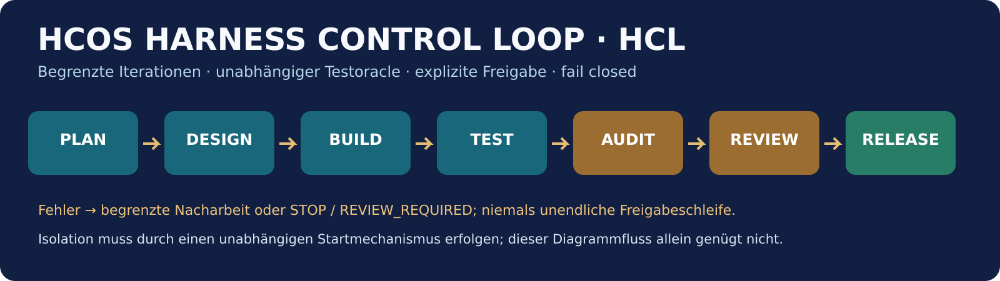

Ein einziges, durchgehend redigiertes Gesamtwerk – Architektur, IA/XD, Entwicklungssprache, M01–M13, 50-Repositories-Ökosystem, Blockchain/Web3/Finance, unabhängige Kontrollgrenzen, Harness Loop, 34 Normen-Dossiers, Freigaberegeln und visuelles Design.
Redaktionsstand: 06.11.2026 | Bestandsgrundlage: HCOS FORINA TITAN v1.7.0 (4cd1db2066237798717d201fc4a0a46759664a85) | Art: Konzept/Implementierungsplan, kein externes Zertifikat.
Zusammenführungsprinzip: Überlappende Standardtexte aus vier Fachbänden wurden in Kapitel 1 gebündelt. 136 Themen sind erhalten; ergänzend wurden die eigenständigen Aussagen des 50-Repository-Masterkonzepts integriert. Technische Claims werden nicht als erwiesene Produktionsreife dargestellt. Dieses Dokument löst die vier sich wiederholenden Einzelbände als kanonische Lesefassung ab.
Das Manuskript folgt der tatsächlichen Abfolge einer Implementierung: Zuerst werden Verantwortung, Zonen, Kontrollpunkte und Abnahmeziele festgelegt. Danach wird das Produkt aus Sicht der Anwender und seiner Module entworfen. Anschließend werden die Entwicklerbegriffe und die Verträge zwischen den Komponenten verbindlich erklärt. Die Finanz- und Web3-Abschnitte definieren bewusst zunächst beobachtende und nachweisende Funktionen; aktive Geldbewegungen stehen außerhalb des Read-only-Zielsystems. Zum Abschluss werden regulatorische Anforderungen, Audit-Dossiers und der Release-Zyklus in ein belastbares Steuerungsmodell überführt. Referenzdaten liegen zusätzlich als CSV/JSON vor, damit sie nicht auf jeder Fachseite neu abgedruckt werden müssen.
Das vorliegende Projekt verfügt laut dem zugrunde gelegten GitHub-Stand über modulare Python-Komponenten, M01–M13-Registrierungen, eine Build-Pipeline, ein Browser-Cockpit, einen Repository-Explorer, Security-Scanner und eine interne Assurance-Steuerung. Diese Existenz ist von ihren Qualitätsbehauptungen zu trennen. Die im Repository verwendeten Bezeichnungen „Freigegeben“, „fully assured“ oder „sovereign certification“ belegen für sich allein weder ein unabhängiges Audit noch eine aufsichtsrechtliche Genehmigung. Jedes Modul braucht deshalb einen Herkunftsnachweis, eine reproduzierbare Build-Identität, fachliche Akzeptanzfälle und eine technische Grenze, die unabhängig vom Modul selbst kontrolliert wird.
Das Gesamtziel ist eine vernetzte, aber nicht unkontrolliert verknüpfte Plattform: Eine Control Plane verwaltet Identitäten, Fähigkeiten, Richtlinien und Status; eine Data Plane verarbeitet ausschließlich autorisierte Fachobjekte; eine Assurance Plane verifiziert Artefakte, Protokolle und Entscheidungen; und eine getrennte Signaturinstanz bescheinigt lediglich die Integrität eines konkret bezeichneten Datensatzes. Positive Prüfmeldungen sind keine Zugriffsrechte. Keine Webkarte, kein Agentenprompt und keine Badge-Grafik darf die Durchsetzung dieser Trennung ersetzen.
Für die Produktentwicklung sind zwei Arbeitsweisen bewusst zu unterscheiden. Das allgemeine HCOS-Portal kann opt-in-Föderation mit externen Diensten besitzen, wenn Rechtsgrundlage, technische Scopes und Eigentümer feststehen. Der ausdrücklich separat geregelte UPUIA-Scanner bleibt dagegen ein lokal ausgeführtes Offline-Werkzeug: unveränderte Originaldateien, keine Systeminstallation, kein Container, keine Hostregeländerung, keine echten Schlüssel, keine Telemetrie und kein Netzwerk. Diese strengere Randbedingung darf nicht stillschweigend auf alle HCOS-Portale übertragen werden, muss für UPUIA aber vor dem Start unabhängig vom Python-Prozess beweisbar erfüllt sein.
Jedes Fachthema läuft durch dieselbe verbindliche Entscheidungskette, damit die folgenden Kapitel ihre Besonderheiten beschreiben können, statt diese Methode immer neu zu wiederholen. Beim Intake werden Eigentümer, Anwendungszweck, vorgesehene Nutzer, Datenklasse, Bedrohungsmodell und verbotene Nebenwirkungen schriftlich erfasst. Die Spezifikation liefert versionierte Eingabe- und Ausgabeformate einschließlich Fehlertypen, Timeout, Idempotenz, Rollen- und Zonenbeschränkungen. Das Design legt fest, an welcher Vertrauensgrenze eine Kontrolle wirkt und welches unabhängige Testorakel sie beurteilt. Erst danach entsteht der kleinste prüfbare Implementierungsschritt.
BUILD arbeitet aus einer freigegebenen Aufgabenliste und erzeugt ein klar abgegrenztes Artefakt. TEST vergleicht es gegen positive und ausdrücklich adversarielle Fälle. AUDIT prüft signierte Provenienz, Reproduzierbarkeit, Lizenz- und Sicherheitsnachweise, nicht lediglich Statusstrings. Eine zuständige Person entscheidet über Ausnahmen, rechtlich relevante Aussagen und Änderungen an Berechtigungen. RELEASE veröffentlicht nur die freigegebene Version in die erlaubte Zone und bindet Rollback, Monitoring und Widerruf an dieselbe Kennung. Dieser Ablauf wird in den Fachkapiteln nicht jedes Mal wiederholt; sie nennen stattdessen nur ihre spezifischen Integrations- und Prüfschritte.
Jedes Ergebnis wird als Evidence Envelope festgehalten: task_id, requirement_id, module_id, zone, source_ref, artifact_hash, test_run_id, policy_revision, reviewer_id, decision, valid_from, valid_until und rollback_ref. Ein frei formuliertes KI-Urteil darf den decision-Wert nicht setzen. Für jedes Risiko existiert mindestens ein Negativtest. Fehlende Daten, unbekannte Schlüssel, ungültige Signaturen, widerrufene Freigaben und abgelaufene Evidence erzeugen BLOCKED oder REVIEW_REQUIRED, niemals ein stilles „PASS“.
Die Local Sovereign Zone enthält lokal freigegebene und technisch isolierte Komponenten; öffentliche Metadaten können dort nach kontrolliertem Import verarbeitet werden. Die Development & Research Zone ist für öffentliche Repository-Funde, Tests und ausschließlich synthetische Beispiele vorgesehen. Die Federation & Integration Zone bedient authentisierte Online-Connectoren für JMAP, OIDC, Domain-Daten oder Open-Banking-Informationsabfragen, wenn sie für das jeweilige Produkt explizit aktiviert wurden. Zwischen diesen Bereichen gilt keine „implizite Vertrauensstellung“: Jeder grenzüberschreitende Transfer erhält ein benanntes Exportformat, eine Freigabe, Integritätskontrolle und minimierte Datensätze.
Die Datenklassen PUBLIC, SYNTHETIC, INTERNAL, RESTRICTED und SECRET stehen nicht nur im Glossar. Sie steuern Auswahlfilter, Zugriffsverträge, Speicherdauer und Darstellung. Für streng lokale Scans werden secret- und zertifikatstypische Dateien vor dem Öffnen ausgeschlossen; nachträgliche Maskierung wäre zu spät. Online-Modelle und Agenten erhalten höchstens synthetische Testgegenstände und öffentlich freigegebenes Material. Finanzbeobachtungen werden standardmäßig pseudonymisiert oder aggregiert; schreibende Finanzbefehle sind im M08-Analysepfad strukturell nicht vorhanden.
Der gewünschte Harness Loop ist eine automatisierte Arbeitssteuerung, keine magische Garantie. Er verwaltet eine überprüfbare Abfolge von PLAN, DESIGN, BUILD, TEST, AUDIT, HUMAN REVIEW, RELEASE und MONITOR. Zu Beginn werden ein konkretes Ziel, ein Satz unveränderlicher Muss-Kriterien, erlaubte Werkzeuge, eine Zielzone, ein Zeit-/Iterationsbudget und ein eindeutiger Stoppzustand festgelegt. Das Orakel liest die Ergebnisse unabhängig vom erzeugenden Agenten. Bei einer Abweichung erzeugt die Steuerung einen Defect-Record mit beobachtetem Fehler, Eingabeartefakt, Reproduktionsschritt und zugeordneter Person. Die Schleife versucht eine Änderung ausschließlich innerhalb der vorgegebenen Grenze; nach dem Budget endet sie mit einer nachvollziehbaren Übergabe.
Der mitgelieferte Python-Prototyp ist absichtlich offline und synthetisch. Er demonstriert Zustandsübergänge, SHA-256-Evidenz, maximal sechs Iterationen, Prüfregeln und Freigabepunkte ohne echten Code-Executor. Für produktiven Einsatz müsste ein separater, unabhängiger Startmechanismus Dateipfade, Programmidentität, Netzwerkverbot, Umgebung, Capabilities und Abhängigkeiten vor dem Start prüfen. Ein Agent oder Test darf diese Sperre nicht durch eigene Python-Patches ersetzen. Zahlungen, Schlüsselzugriffe, Veröffentlichungen, behördliche Aussagen und externe Zertifikatsprüfzeichen bleiben zustimmungspflichtige Fachaktionen außerhalb des automatischen Builders.
Die Freigabe lautet nicht einfach „alles grün“. Die Entscheidung muss zeigen, welches Verhalten überprüft wurde, mit welchem Sollwert, welche veränderte Datei umfasst war und welche Risiken offen sind. Auf dieser Basis kann das Cockpit einen Sachstand präzise in „Entwurf“, „getestet“, „intern verifiziert“, „zur Review bereit“ oder „extern nachgewiesen“ unterscheiden. Die Übergänge dürfen nur durch die jeweils berechtigte Rolle gesetzt werden und müssen widerrufbar bleiben.
Das HCOS-Design erhält eine klare Informationsebene mit einer ruhigen, barrierearmen Grundfläche, kontrastreichen Akzentfarben und einer separaten, deutlich erkennbaren Statussprache. Visuelle Bewegung – etwa GSAP-Animationen, 3D-Holografik oder Audiosignale – ist optional und respektiert reduzierte Bewegung, Tastaturnavigation und Screenreader. Für Sicherheitszustände sind Farbe und Symbol allein unzureichend; der tatsächliche Backendwert, Prüfzeitpunkt, Scope und der direkte Weg zum Evidence-Dossier müssen im Text stehen. „PASS“ darf nicht hart codiert sein. Eine fehlende Datenquelle zeigt „unbekannt“, nicht eine dekorative Erfolgsanzeige.
Ein originäres HCOS-Logo und Banner werden als wiederverwendbare Design-Assets beigefügt. Interne Nachweisabzeichen enthalten ihre Bedeutung sichtbar; offizielle Zeichen von ISO, EU, BSI, ENX oder Zertifizierungsstellen dürfen weder nachgezeichnet noch wie verliehen dargestellt werden. Erst ein überprüfbares Drittzertifikat mit Aussteller, Nummer, Geltungsbereich, Gültigkeitsdatum und Markenfreigabe rechtfertigt eine entsprechende externe Darstellung. Die 34 beiliegenden Norm-Abzeichen sind ausdrücklich neutrale interne Vorlagen.
Die folgenden 34 Kapitel übernehmen ausschließlich die fachlich unterscheidbaren Aussagen des ursprünglichen Architektur- und Designbandes. Gemeinsame Regeln zu Evidenz, Tests, Berechtigungen und Release wurden bereits in Teil I festgelegt. Die Module M01–M13 werden hier als fachliche Fähigkeitsgruppen gelesen, nicht automatisch als durch externe Tests produktiv bestätigt.
Die bestehende Plattform besitzt viele Funktionsgruppen, jedoch fehlt ein verbindlicher Gesamtnutzen mit Grenzen je Betriebszone. Ein öffentlich lesbares Zielbild unterscheidet Portal, Engine, offline geschützte lokale Werkzeuge und nur autorisierte Föderation.
Capability-Karte mit Owner, Betriebszone, Datenklasse, Kritikalität, Vertrag und Systemgrenze.
Ein ausdrücklich zu testender Fehlermodus ist: Feature-Wildwuchs, unklare Zuständigkeit und unbewiesene Produktivfreigaben.
Ein überprüfbarer fachlicher Erfolg liegt vor, wenn: Jede Capability hat Owner, API-Vertrag, Evidenzstatus und Rückbaupfad. Das folgende Nutzungsszenario macht diese Anforderung konkret: Ein Dashboard-Wechsel darf niemals automatisch eine Zahlungs- oder Föderationsberechtigung erteilen.
Verschiedene Tabs und Modulregister zeigen Fähigkeiten, aber Nutzer suchen nach Aufgaben statt Dateinamen. Task-first-Navigation nach Prüfen, Erforschen, Bauen, Freigeben und Beobachten ersetzt ein flaches Menü.
Navigationsschema aus Arbeitsbereich, Objekt, Aktivität, Sicherheitsstatus und zuletzt genutztem Kontext.
Ein ausdrücklich zu testender Fehlermodus ist: Verwechslung von Read-only- und Aktionsmodi führt zu gefährlichen Klickpfaden.
Ein überprüfbarer fachlicher Erfolg liegt vor, wenn: Ein neuer Benutzer findet den Prüfbericht ohne Einarbeitung und erkennt vor jeder Aktion die Folgen. Das folgende Nutzungsszenario macht diese Anforderung konkret: Ein Prüfer sucht Belege für M07 und gelangt in höchstens drei Schritten zum passenden Evidence-Graphen.
Das Portal wirkt technisch, aber Statusmeldungen und Aufgabenfolgen sind nicht durchgängig verständlich. Ein konsistentes Interaktionsmodell verbindet Sprache, Feedback, Vorschau, Widerruf und sichtbare Systemgrenzen.
Experience-Tokens für Zustände, Aufgaben, Warnungen, Eingaben, Fehler und leere Ansichten.
Ein ausdrücklich zu testender Fehlermodus ist: Schöne Animationen dürfen keinen falschen Sicherheitszustand visualisieren.
Ein überprüfbarer fachlicher Erfolg liegt vor, wenn: Jeder entscheidende Workflow besitzt Start, Vorschau, Folgenhinweis, Bestätigung, Ergebnis und Rückweg. Das folgende Nutzungsszenario macht diese Anforderung konkret: Bei fehlendem Evidence-Datensatz zeigt der Bildschirm neutral unbekannt statt grünes Erfolgslicht.
Automatisierte Agenten und Prüfpipelines sind vorhanden, ihr Entscheidungsspielraum ist jedoch nicht konsequent formalisiert. IA bedeutet hier Intelligent Automation: Planen, Prüfen, Wiederholen mit deterministischen Freigabegrenzen.
ActionContract mit erlaubter Aktion, Eignern, Ressourcenbudget, Testoracle und Schadensklasse.
Ein ausdrücklich zu testender Fehlermodus ist: Selbstreferenzierende Aktionen oder ungeprüfte autonome Änderungen können sich hochschaukeln.
Ein überprüfbarer fachlicher Erfolg liegt vor, wenn: Die Automationsschleife stoppt bei unklarer Autorität oder fehlendem Beleg und verlangt Menschenentscheidung. Das folgende Nutzungsszenario macht diese Anforderung konkret: Ein Agent schlägt einen Fix vor; nur isolierte Tests und explizite Freigabe lassen ihn in einen Release gelangen.
Leuchtende Statusanzeigen und interaktive Module benötigen gemeinsame visuelle Regeln statt Einzelgestaltung. Eine UI-Bibliothek definiert Typografie, Kontrast, Fokus, Raster, Motion, Schrift und barrierearme Semantik.
Design-Tokens als versionierte JSON-Schemata; Komponenten für EvidenceCard, GateStatus, ScopeBanner und SafeAction.
Ein ausdrücklich zu testender Fehlermodus ist: Ablenkende Daueranimation und unzureichender Kontrast beeinträchtigen Vertrauen und Barrierefreiheit.
Ein überprüfbarer fachlicher Erfolg liegt vor, wenn: Jedes UI-Element hat Tastaturpfad, Screenreader-Name, Disabled-Zustand und nachvollziehbare Fehlermeldung. Das folgende Nutzungsszenario macht diese Anforderung konkret: Eine Prüfstufe wechselt nur dann auf grün, wenn die Backend-Signatur einer gültigen Audit-Entscheidung vorliegt.
Im Registry-Modell sind 13 Kernmodule und weitere Funktionsgruppen vorhanden; die Grenzen sind teilweise implizit. Ein Capability-Graph definiert exakt, wer Daten lesen, Mutationen ausführen oder nur Vorschläge generieren darf.
module_id, capability_id, input_schema, output_schema, permission, zone, evidence_ref und dependency_hash.
Ein ausdrücklich zu testender Fehlermodus ist: Import-seitige Effekte und transitive Abhängigkeiten können die Sicherheitsgrenze unterlaufen.
Ein überprüfbarer fachlicher Erfolg liegt vor, wenn: Alle 13 Module haben maschinenlesbare Verträge mit Negativtests und signierten Versionsfreigaben. Das folgende Nutzungsszenario macht diese Anforderung konkret: M08 darf Zahlungsdaten auswerten, aber keine Überweisung oder Schreibberechtigung erlangen.
Der neue Explorer listet 50 Projekte, doch Namensmapping ist kein Supply-Chain-Nachweis. Ein verifizierter Katalog trennt Fundstelle, Lizenz-Behauptung, geprüfte Lizenz, Schwachstellen und tatsächliche Einbindung.
Repository-URL, Commit-SHA, Tag, Lizenzbeleg, SBOM, Herkunft und Freigabeidentität je Eintrag.
Ein ausdrücklich zu testender Fehlermodus ist: Namensaliase, ungesicherte Links und unbewiesene Security-Labels verwässern Aussagen.
Ein überprüfbarer fachlicher Erfolg liegt vor, wenn: Kein Repo erhält VERIFIED ohne versionierte Primärquelle, Befund und zuständige Freigabe. Das folgende Nutzungsszenario macht diese Anforderung konkret: Eine neue Katalogzeile landet zunächst in Quarantäne und nicht in Sovereign.
Technische Freigabefunktionen existieren, ohne durchgehendes Rollenmodell für Risikoakzeptanz und externe Aussagen. RACI und Vier-Augen-Prinzip trennen Entwickler, Prüfer, Freigebende und Betreiber.
RoleBinding verknüpft Person oder Dienstidentität mit Scope, Zeit, Zweck und dokumentiertem Widerruf.
Ein ausdrücklich zu testender Fehlermodus ist: Eine Selbstzertifizierung kann sonst unbeabsichtigt als externe Bescheinigung erscheinen.
Ein überprüfbarer fachlicher Erfolg liegt vor, wenn: Zwei unabhängig autorisierte Rollen bestätigen kritische Produktionseingriffe und Audit-Veröffentlichungen. Das folgende Nutzungsszenario macht diese Anforderung konkret: Ein Entwickler darf einen Kontrollbefund korrigieren, aber nicht seinen eigenen Hochrisiko-Befund abschließend abnehmen.
Ein Feature-Tab ist kein verlässlicher Einstieg in komplexe Prüf- und Finanzabläufe. Eine rollenabhängige Startseite zeigt offene Aufgaben, Risiken, unabhängige Prüfnachweise und gesperrte Aktionen.
HomeView aggregiert ReadModel statt direkte Schreibrechte aus M01 bis M13.
Ein ausdrücklich zu testender Fehlermodus ist: Echte Risiken können in dekorativen Karten verschwinden, wenn Priorität falsch gesetzt ist.
Ein überprüfbarer fachlicher Erfolg liegt vor, wenn: Top-Risiken, ausstehende Freigaben und Revisionsstand sind ohne Scrollen erreichbar. Das folgende Nutzungsszenario macht diese Anforderung konkret: Anstelle allgemeiner 100-Prozent-Balken erscheint ein überprüfbarer Status mit Erhebungszeit und Geltungsbereich.
Die Oberfläche kann feste PASS-Texte ausgeben, die nicht dem tatsächlichen Gate-Ergebnis entsprechen. Der Status wird aus signierter Evaluation und Gültigkeitsfenster berechnet, nicht aus UI-Konstanten.
EvidenceStatus: UNKNOWN, OPEN, BLOCKED, PASS_INTERNAL, REVIEWED, EXTERNAL_ATTESTED, EXPIRED.
Ein ausdrücklich zu testender Fehlermodus ist: Ein alter PASS nach neuer Codeversion ist eine Fehlfreigabe.
Ein überprüfbarer fachlicher Erfolg liegt vor, wenn: Statuswechsel sind transaktional und an Artifact-Hash, Signer, Scope und Zeit gebunden. Das folgende Nutzungsszenario macht diese Anforderung konkret: Ein geänderter Build-Hash setzt zuvor erteilte Freigaben automatisch auf erneute Prüfung.
Python-interne Netzwerksperren verhindern keine externen Prozess- oder Bibliothekspfade. Ein unabhängiger Launcher validiert Dateisignaturen, genehmigte Pfade und technische Isolationsfähigkeit vor dem Start.
LaunchManifest mit executable_hash, approved_roots, namespace_attestation, no_egress und policy_version.
Ein ausdrücklich zu testender Fehlermodus ist: Wenn keine isolierende Hostfähigkeit ohne Systemänderung verfügbar ist, muss das Programm nicht starten.
Ein überprüfbarer fachlicher Erfolg liegt vor, wenn: Positivtest mit synthetischer Datei und negativer Egress-Test außerhalb des Scannerprozesses bestehen. Das folgende Nutzungsszenario macht diese Anforderung konkret: Ohne messbaren No-Egress-Nachweis wird der Start abgelehnt, nicht still auf Python-Monkeypatch reduziert.
Der lokale Scanner darf bestehende Arch-Konfiguration weder installieren noch verändern. Eine rein portable Auslieferung nutzt genehmigte Ordner, prüft Bibliotheken und deklariert ihre Laufzeitanforderungen.
Staging-Metadaten mit Hashes, Schreibpfad-Whitelist, Uninstall-Prozedur und keinerlei Hostservice.
Ein ausdrücklich zu testender Fehlermodus ist: Automatisches Paketmanagement, Cron oder Firewall-Änderungen verletzen die Betriebsbedingung.
Ein überprüfbarer fachlicher Erfolg liegt vor, wenn: Tests protokollieren nur Metadaten und zeigen keine Hostmutationen bei Probe und Rückbau. Das folgende Nutzungsszenario macht diese Anforderung konkret: Nach Ausführung unterscheiden sich System-Konfigurationsdateien und Quell-Timestamps nicht.
OIDC und Consent-Komponenten bilden noch keinen einheitlichen globalen Berechtigungsentscheid. Eine Policy Decision Point trennt Authentication, Authorization und Consent für jede sensible Operation.
Subject, purpose, resource, action, jurisdiction, credential_age und grant_id bilden den Policy-Kontext.
Ein ausdrücklich zu testender Fehlermodus ist: Verwechselte Nutzeridentität oder widerrufene Einwilligung ermöglichen unzulässigen Zugriff.
Ein überprüfbarer fachlicher Erfolg liegt vor, wenn: Jeder Zugriff ist default deny und erfordert ein aktuelles, zweckgebundenes Grant. Das folgende Nutzungsszenario macht diese Anforderung konkret: Bei Entzug einer Datenfreigabe verschwindet die Berechtigung aus Cache, Connector und UI.
Ed25519-Bescheinigungen liefern Integrität, aber eigene Signaturen sind keine unabhängigen Zertifizierungen. Das Key-Lifecycle-Modell trennt Signierzwecke, Verwahrung, Rotation, Sperrung und Bestätigung der Schlüsselhoheit.
KeyRecord mit key_id, usage, custodian, created_at, expires_at, revoke_ref und verification_scope.
Ein ausdrücklich zu testender Fehlermodus ist: Ein kompromittierter Schlüssel kann scheinbar gültige Artefakte produzieren.
Ein überprüfbarer fachlicher Erfolg liegt vor, wenn: Gesonderte Schlüssel für Build, Audit und Nutzer-Freigabe; keine privaten Schlüssel in ZIP oder Logs. Das folgende Nutzungsszenario macht diese Anforderung konkret: Ein gesperrter Schlüssel macht alle davon abhängigen Statuskarten ungültig.
Katalog, Finanzanalyse und Agentensitzungen berühren verschiedene Personen- und Geheimnisklassen. Datentypen werden vor Verarbeitung klassifiziert; synthetische Demos und reale Daten bleiben hart getrennt.
DataClass, purpose, lawful_basis, retention, residency, deletion_job und access_policy an jedem Datensatz.
Ein ausdrücklich zu testender Fehlermodus ist: Protokolle oder Testfixtures könnten reale Kontodaten und Zugangsgeheimnisse aufnehmen.
Ein überprüfbarer fachlicher Erfolg liegt vor, wenn: Export und Debugger maskieren vertrauliche Felder; Lösch- und Auskunftswege sind nachweisbar. Das folgende Nutzungsszenario macht diese Anforderung konkret: Ein Support-Report enthält niemals IBAN, Token oder Credential-Klartext.
Die Transaktionsanalyse besitzt Code-Sperren, aber Namensfilter ersetzen keine bankenrechtliche Berechtigungstrennung. Ausschließlich getrennte Read-only-Zugangsdaten und capability-minimierte Connectoren bedienen M08.
AccountLinkId, consent_scope, provider, expiry, read_only_assertion und audit_receipt.
Ein ausdrücklich zu testender Fehlermodus ist: Ein neu angeschlossener Zahlungsprovider darf keine latenten Schreibrechte übernehmen.
Ein überprüfbarer fachlicher Erfolg liegt vor, wenn: Negative API-Tests beweisen, dass Auszahlungen und Lastschriften unabhängig von Aktionsnamen blockiert bleiben. Das folgende Nutzungsszenario macht diese Anforderung konkret: Die UI kann verdächtige Abos markieren, aber niemals Geld verschieben.
Doppelbelastung, Preissteigerung und Zombie-Abos können legitime Zahlungen falsch einordnen. Ein erklärbares Regelwerk zeigt Annahmen, Vertrauenswerte, Gegenbeispiele und Nutzerfeedback.
Finding mit rule_version, evidence_refs, confidence_band, currency, period und reversible_label.
Ein ausdrücklich zu testender Fehlermodus ist: Unbegründete Ersparnisbehauptungen könnten finanzielle Entscheidungen verfälschen.
Ein überprüfbarer fachlicher Erfolg liegt vor, wenn: Befunde gelten als Hinweise mit Rücknahmeoption und werden auf synthetischen Testfällen kalibriert. Das folgende Nutzungsszenario macht diese Anforderung konkret: Zwei gleiche Kaffeezahlungen bleiben zunächst Verdacht, solange keine Händler-ID oder Buchungskorrektur geklärt ist.
Technischer DNS/TLS-Erfolg ist keine Organisationsverifizierung und kein Föderationsrecht. Eine gestufte Trust-Kette behandelt Discovery, Kontrolle, Organisation, Compliance und explizite Autorisierung getrennt.
DomainTrustRecord mit proofs, claim_type, registrar_check, legal_entity_ref, scope und valid_until.
Ein ausdrücklich zu testender Fehlermodus ist: Einfache URL-Scans dürfen keine staatliche Zugehörigkeit oder Akkreditierung suggerieren.
Ein überprüfbarer fachlicher Erfolg liegt vor, wenn: Statuswerte werden nie übersprungen; Federation beginnt nur nach dokumentierter Einwilligung der Organisation. Das folgende Nutzungsszenario macht diese Anforderung konkret: Eine .gov-Domain ohne belegte Delegation erhält kein Organisationszertifikat.
Viele Dienste lassen sich anbinden, aber undokumentierte Eventverträge verursachen verdeckte Nebenwirkungen. Schema Registry, versionierte Events, Idempotenz und Replay-Schutz werden zum verbindlichen Integrationskern.
OpenAPI/AsyncAPI Verträge für command_id, correlation_id, policy_ref, schema_version und idempotency_key.
Ein ausdrücklich zu testender Fehlermodus ist: Event-Duplikate, Ausführungsreihenfolge und inkonsistente Retries gefährden Datenzustände.
Ein überprüfbarer fachlicher Erfolg liegt vor, wenn: Contract-Tests und Dead-letter-Queues sind für jede asynchrone Verbindung definiert. Das folgende Nutzungsszenario macht diese Anforderung konkret: Eine doppelte Nachricht löst dieselbe fachliche Aktion höchstens einmal aus.
Dokumente, URLs, Frameworks und Repo-Evidenz bleiben sonst in mehreren Listen isoliert. Ein gerichteter Evidence Graph verbindet Anforderungen mit Assets, Kontrollen, Tests und verantwortlichen Prüfern.
Nodes für Source, Requirement, Control, Artifact, TestRun und Approval; Edges mit signierter Herkunft.
Ein ausdrücklich zu testender Fehlermodus ist: Automatisch abgeleitete Beziehungen könnten als offizielle Referenz durchgehen.
Ein überprüfbarer fachlicher Erfolg liegt vor, wenn: Jeder inferierte Mapping-Edge besitzt Konfidenz, Begründung und menschliche Freigabestufe. Das folgende Nutzungsszenario macht diese Anforderung konkret: Eine OWASP-Prüfung führt per Klick zu Code-Test, Prüflauf und konkreter Anforderung.
Ein Agent, der Tools frei ausführen darf, kann Sicherheitsgrenzen umgehen, auch wenn sein Text harmlos aussieht. Capabilities werden außerhalb des Prompt-Kontexts technisch erzwungen; Agenten liefern zunächst Vorschläge.
AgentTask mit inputs, output_schema, budget, tool_allowlist, approved_workspace und risk_class.
Ein ausdrücklich zu testender Fehlermodus ist: Prompt-Injection über Repos, Mails oder Webseiten darf keine neue Toolberechtigung erzeugen.
Ein überprüfbarer fachlicher Erfolg liegt vor, wenn: Jede Agentenaktion ist einer expliziten Policy zugeordnet; nicht erlaubte Toolaufrufe werden abgewiesen. Das folgende Nutzungsszenario macht diese Anforderung konkret: Ein Webseitenhinweis auf sudo-Befehle bleibt Dateninhalt und niemals Handlungsanweisung.
Eine schnelle Implementationsserie benötigt reproduzierbare Kontrollpunkte statt unendlicher Selbstbestätigung. Plan-Build-Test-Audit-Review-Release-Monitor bildet eine begrenzte, policy-gesteuerte Verbesserungsfolge.
LoopRecord mit iteration, task_id, state, input_hash, test_oracle, evidence_hash und stop_reason.
Ein ausdrücklich zu testender Fehlermodus ist: Endlosschleifen, unsichere Selbstfreigabe und Modelldrift müssen ausdrücklich verhindert werden.
Ein überprüfbarer fachlicher Erfolg liegt vor, wenn: Maximale Iterationen, Budget, Freigabepflicht und negativer Test gehören in jede Arbeitsdefinition. Das folgende Nutzungsszenario macht diese Anforderung konkret: Wenn ein Test dreimal nicht besteht, stoppt die Schleife und erstellt ein handlungsfähiges Defect-Dossier.
Ein grüner Test ist nicht automatisch beweiskräftig, wenn Ausführer und Prüfer identisch sind. Ein Evidence Bus versieht jede Entscheidung mit Quelle, Hash, Scope, Zeit und Prüferidentität.
EvidenceEnvelope als kanonisches JSON mit Schema-Id, input/output digest, issuer und signer_role.
Ein ausdrücklich zu testender Fehlermodus ist: Unvollständige Logs oder nachträgliche Änderungen entwerten Revisionssicherheit.
Ein überprüfbarer fachlicher Erfolg liegt vor, wenn: Für jedes Gate existiert ein reproduzierbarer Datensatz mit unabhängiger Prüfroutine. Das folgende Nutzungsszenario macht diese Anforderung konkret: Auditoren können eine Freigabe offline anhand von Paket, Manifest und Public Key überprüfen.
Statische PASS-Aufschriften können fail-closed Entscheidungen im Backend visuell überdecken. Das Cockpit zeigt pro Gate Ergebnis, Beleg, Prüfer, Ausführungsdatum, Gültigkeit und Fehlergrund.
GateView wird ausschließlich aus signierten Status-Events und nicht aus hartcodierter Farbe erzeugt.
Ein ausdrücklich zu testender Fehlermodus ist: Ein einzelner unbekannter Gate-Status kann sonst fälschlich als Systemfreigabe erscheinen.
Ein überprüfbarer fachlicher Erfolg liegt vor, wenn: FAILED, UNKNOWN und EXPIRED sind sichtbar verschieden und blockieren kritische Buttons. Das folgende Nutzungsszenario macht diese Anforderung konkret: Ein G08-Mismatch erzeugt eine rote Sperrkarte mit betroffener Datei und Recheck-Aktion.
Ein intern erzeugtes Zertifikat kann unbeabsichtigt wie ein offizielles ISO- oder EU-Siegel wirken. Interne Prüfmarken unterscheiden sich sichtbar von externen Zertifizierungszeichen und zeigen ihren Aussteller.
BadgeRecord mit assertion_type, scope, issuer, issued_at, expiry, evidence_url und revocation_endpoint.
Ein ausdrücklich zu testender Fehlermodus ist: Falsche Zertifikatsbehauptungen erzeugen Rechts- und Vertrauensrisiken.
Ein überprüfbarer fachlicher Erfolg liegt vor, wenn: Offizielle Marken erscheinen nur mit erlaubter Nutzung und einem überprüfbaren Zertifikat. Das folgende Nutzungsszenario macht diese Anforderung konkret: Das Portal zeigt INTERN AUDITIERT statt ISO ZERTIFIZIERT, wenn keine akkreditierte Stelle beteiligt war.
Komplexe Graphiken, animierte Dashboards und Kontrastfarben können Nutzergruppen ausschließen. WCAG-orientierte Komponenten mit reduzierter Bewegung, Tastaturführung und verständlichen Fehlermeldungen.
Token für Farbkontrast, focus-visible, aria-label, reduced-motion und lokalisierte Statusnamen.
Ein ausdrücklich zu testender Fehlermodus ist: Screenreader erhalten möglicherweise eine falsche Reihenfolge oder rein dekorative Warnungen.
Ein überprüfbarer fachlicher Erfolg liegt vor, wenn: Automatisierte Axe-Prüfung und manuelle Tastaturtests bestehen auf zentralen Use Cases. Das folgende Nutzungsszenario macht diese Anforderung konkret: Eine Warnung ist mit Text und Symbol wahrnehmbar und nicht nur rot gefärbt.
Internationale Normen und Mandate unterscheiden sich nach Rechtsraum und Nutzerrolle. Jurisdiction Resolver wählt Texte, Rechtsgrundlagen und Anforderungen anhand belegter Anwendbarkeit.
LegalApplicability mit country, sector, legal_role, legal_basis, version und review_date.
Ein ausdrücklich zu testender Fehlermodus ist: Eine generische EU-Regel könnte fälschlich auf USA oder CH übertragen werden.
Ein überprüfbarer fachlicher Erfolg liegt vor, wenn: Jede länderspezifische Aussage besitzt einen Normverweis und letzten Reviewzeitpunkt. Das folgende Nutzungsszenario macht diese Anforderung konkret: DE, EN und FR zeigen dieselbe technische Prüfung, aber korrekte regionale Rechtskontexte.
Telemetrie ist nützlich, darf aber sensible Nutzdaten, Prompts oder Schlüssel nicht exponieren. Metriken und strukturelle Ereignisse werden ohne Payloads, mit Sampling und striktem Redaction-Schema erhoben.
EventSchema mit severity, request_id, elapsed_ms, control_id und secret_scrub_result.
Ein ausdrücklich zu testender Fehlermodus ist: Selbst gut gemeinte Debug-Protokolle könnten echte Bankdaten enthalten.
Ein überprüfbarer fachlicher Erfolg liegt vor, wenn: Redaction-Fuzzing bestätigt, dass keine Test-Token oder personenbezogenen Werte gespeichert werden. Das folgende Nutzungsszenario macht diese Anforderung konkret: Eine Fehlermeldung nennt einen anonymen Referenzcode statt einer IBAN.
Die bisherige Regex-Erkennung ist hilfreich, aber gegen Toolmissbrauch und Supply-Chain-Angriffe unvollständig. STRIDE, ATT&CK-Mapping und Missbrauchsszenarien werden pro Integrationsgrenze modelliert.
ThreatRecord mit actor, trust_boundary, abuse_case, impact, mitigation, test und residual_risk.
Ein ausdrücklich zu testender Fehlermodus ist: Insbesondere URI-Schemas, Archive, dynamische Imports und Agenten-Tools erlauben Umgehungen.
Ein überprüfbarer fachlicher Erfolg liegt vor, wenn: Jede High-Risk-Grenze hat mindestens einen Negativtest und dokumentierte Restrestrisiken. Das folgende Nutzungsszenario macht diese Anforderung konkret: Eine manipulierte URL mit javascript-Schema wird im Webkatalog blockiert.
Eine Liste von Projektnamen sagt nichts über den tatsächlich ausgelieferten Binärinhalt aus. Build-Provenienz, SBOM, gepinnte Abhängigkeiten und signierte Artefakte bilden eine gemeinsame Kette.
ReleaseManifest mit commit, dependency_lock, builder_id, SBoM_digest, build_hash und verification_method.
Ein ausdrücklich zu testender Fehlermodus ist: Ungeprüfte Netzwerkdownloads und Binary-Replacement gefährden die portable Distribution.
Ein überprüfbarer fachlicher Erfolg liegt vor, wenn: Ein externer Prüfer kann das Paket auf exakt definierte Quellen und Binärhashes zurückführen. Das folgende Nutzungsszenario macht diese Anforderung konkret: Ein AppImage wird nur veröffentlicht, wenn Hash, Signatur und vorab geprüftes Manifest übereinstimmen.
Ein Backup, das sich extrahieren lässt, belegt noch nicht die vollständige Wiederanlaufbarkeit. Restore-Drills testen Integrität, Anwendungen, Datenkonsistenz und geheimnisfreie Wiederherstellung.
RestoreRun mit archive_digest, restoration_scope, RTO, RPO, file_parity und verified_by.
Ein ausdrücklich zu testender Fehlermodus ist: Ein Archiv kann unvollständige Tabellen oder unsichere Symlinks enthalten.
Ein überprüfbarer fachlicher Erfolg liegt vor, wenn: Vollständiger Hashvergleich, kontrollierte Extraktion und simuliertes Anlaufen mit synthetischen Daten. Das folgende Nutzungsszenario macht diese Anforderung konkret: Eine monatliche Testwiederherstellung erreicht das definierte RTO, ohne den Host zu verändern.
Häufige Commits und Tags brauchen klare Stufen zwischen Experiment, Pilot und Veröffentlichung. A signiertes Release-Promotionsmodell trennt Dev, Synthetic, Audit und Production mit Rollbackbedingungen.
ReleaseRecord mit stage, artifact_digest, approvals, gate_results, rollback_image und change_window.
Ein ausdrücklich zu testender Fehlermodus ist: Feste Produktivlabels könnten bei neuen Fehlern unverändert bestehen bleiben.
Ein überprüfbarer fachlicher Erfolg liegt vor, wenn: Ein neues Release ist ohne unabhängige Gate- und Policy-Nachweise nicht promotierbar. Das folgende Nutzungsszenario macht diese Anforderung konkret: Bei Fehlalarm wird das zuletzt freigegebene Paket ohne Neuinstallation wiederhergestellt.
Viele Module erhöhen den Nutzen, erzeugen aber auch laufende Wartungs- und Prüflasten. Kosten- und Kapazitätsbudgets werden pro Service, Datenzone und externem Connector geplant.
BudgetCard mit unit_cost, usage_cap, license_obligation, maintenance_owner und cost_ceiling.
Ein ausdrücklich zu testender Fehlermodus ist: Ein scheinbar kostenloser Dienst kann teure Nutzung, Datenabfluss oder Lizenzpflichten auslösen.
Ein überprüfbarer fachlicher Erfolg liegt vor, wenn: Keine Funktion verlässt die Pilotphase ohne Kostendeckel, Exit-Plan und vollständige Abhängigkeiten. Das folgende Nutzungsszenario macht diese Anforderung konkret: Ein neuer Open-Banking-Connector hat getrennte monatliche Kosten- und Risikoobergrenzen.
Die technische Breite verlangt eine klare Reihenfolge und messbare Qualitätsdefinitionen. Eine priorisierte 90/180/365-Tage-Roadmap ordnet Sicherheitsgrenzen vor UI-Politur und optionalen Integrationen.
RoadmapItem mit value, dependency, effort, risk_reduction, owner, milestone und evidence_target.
Ein ausdrücklich zu testender Fehlermodus ist: Arbeit an attraktiven Oberflächen kann existenzielle Sicherheitsblocker verdrängen.
Ein überprüfbarer fachlicher Erfolg liegt vor, wenn: In jedem Sprint wird nach negativen Tests, Belegabdeckung und Nutzbarkeit statt Featurezahl priorisiert. Das folgende Nutzungsszenario macht diese Anforderung konkret: Sprint 1 beseitigt irreversible Risiken; Sprint 2 verbessert die Bedienung; Sprint 3 skaliert Integrationen.
Die 34 Wortschatzkapitel liefern Begriffsnetze für Entwickler, UX, Sicherheitsverantwortliche und Prüfer. Die Langformen werden einmal pro Kapitel benannt; wiederholte allgemeine Glossarfelder sind im gemeinsamen Schema in Teil I beschrieben. „Verwendet“ bedeutet hier eine bewusste Zuordnung zu einem Daten- oder Prozessvertrag und nicht, dass ein Repository bereits installiert, sicherheitsgeprüft oder rechtskonform ist.
Das Vokabular dieses Bereichs besteht aus REQ (Requirement); NFR (Nonfunctional Requirement); SLO (Service Level Objective); SLI (Service Level Indicator); DoD (Definition of Done); AC (Acceptance Criteria); RACI (Responsible Accountable Consulted Informed); ADR (Architecture Decision Record); RFC (Request for Comments).
Abnahmekriterien statt Wunschlisten. Zielbild als versionierte Entscheidung mit nachvollziehbaren Akzeptanztests Ein technisches Anwendungsbeispiel verbindet REQ, NFR, SLO, SLI, DoD mit den dazugehörigen Vertragsfeldern.
Das Vokabular dieses Bereichs besteht aus IA (Information Architecture); JTBD (Jobs To Be Done); Sitemap (Navigation Map); Taxonomy (Klassifikation); Ontology (Begriffsmodell); Facet (Suchfiltermerkmal); Breadcrumb (Navigationspfad); ContentType (Inhaltsmodell); CardSort (Karten-Sortierung).
Nutzeraufgaben über Organisationsmodule stellen. Suche nach Auditbelegen statt Navigation nach Python-Datei Ein technisches Anwendungsbeispiel verbindet IA, JTBD, Sitemap, Taxonomy, Ontology mit den dazugehörigen Vertragsfeldern.
Das Vokabular dieses Bereichs besteht aus XD (Experience Design); UX (User Experience); UI (User Interface); CX (Customer Experience); HCD (Human-Centered Design); UCD (User-Centered Design); HE (Heuristic Evaluation); SUS (System Usability Scale); UXR (User Experience Research).
Konsequenzen vor attraktiven Animationen sichtbar machen. Read-only-Analyse mit sicherem Zustand und verständlicher Vorschau Ein technisches Anwendungsbeispiel verbindet XD, UX, UI, CX, HCD mit den dazugehörigen Vertragsfeldern.
Das Vokabular dieses Bereichs besteht aus DT (Design Token); DS (Design System); A11Y (Accessibility); ARIA (Accessible Rich Internet Applications); RTL (Right-to-Left); WCAG (Web Content Accessibility Guidelines); L10N (Localization); I18N (Internationalization); Figma (Design Collaboration Tool).
Barrierefreie wiederverwendbare Komponenten und Tokens. Statuskarte mit Fehler- und Unbekanntzustand Ein technisches Anwendungsbeispiel verbindet DT, DS, A11Y, ARIA, RTL mit den dazugehörigen Vertragsfeldern.
Das Vokabular dieses Bereichs besteht aus SPA (Single Page Application); SSR (Server-Side Rendering); SSG (Static Site Generation); CSP (Content Security Policy); DOM (Document Object Model); XSS (Cross-Site Scripting); CSRF (Cross-Site Request Forgery); SRI (Subresource Integrity); CORS (Cross-Origin Resource Sharing).
Sichere Rendering-Grenzen für untrusted CSV. Repository-Karten ohne riskante href-Schemas Ein technisches Anwendungsbeispiel verbindet SPA, SSR, SSG, CSP, DOM mit den dazugehörigen Vertragsfeldern.
Das Vokabular dieses Bereichs besteht aus REST (Representational State Transfer); RPC (Remote Procedure Call); DTO (Data Transfer Object); BFF (Backend for Frontend); CQRS (Command Query Responsibility Segregation); DDD (Domain-Driven Design); ORM (Object Relational Mapping); CRUD (Create Read Update Delete); HTTP (Hypertext Transfer Protocol).
Trennung von Read Models und Befehlsausführung. Sovereign-API liefert belegte Statuswerte ohne Seiteneffekte Ein technisches Anwendungsbeispiel verbindet REST, RPC, DTO, BFF, CQRS mit den dazugehörigen Vertragsfeldern.
Das Vokabular dieses Bereichs besteht aus JSON (JavaScript Object Notation); JSONS (JSON Schema); YAML (YAML Ain't Markup Language); CSV (Comma-Separated Values); XML (Extensible Markup Language); XSD (XML Schema Definition); Protobuf (Protocol Buffers); Avro (Apache Avro); IDL (Interface Definition Language).
Versionierte JSON-Nachrichten und Validatoren. Audit-Event bleibt bei UI-Update rückwärtskompatibel Ein technisches Anwendungsbeispiel verbindet JSON, JSONS, YAML, CSV, XML mit den dazugehörigen Vertragsfeldern.
Das Vokabular dieses Bereichs besteht aus OpenAPI (OpenAPI Specification); AsyncAPI (AsyncAPI Specification); SDK (Software Development Kit); API (Application Programming Interface); SemVer (Semantic Versioning); OAuth (Open Authorization); OIDC (OpenID Connect); JWT (JSON Web Token); IdemKey (Idempotency Key).
Explizite Connector-Autorisierung ohne implizite Rechte. Read-only Banking Vertrag und stufenweise Versionierung Ein technisches Anwendungsbeispiel verbindet OpenAPI, AsyncAPI, SDK, API, SemVer mit den dazugehörigen Vertragsfeldern.
Das Vokabular dieses Bereichs besteht aus EDA (Event-Driven Architecture); DLQ (Dead Letter Queue); CDC (Change Data Capture); Outbox (Transactional Outbox); Saga (Distributed Transaction Coordination); ETag (Entity Tag); TTL (Time To Live); ACK (Acknowledgment); NACK (Negative Acknowledgment).
Doppelte Events führen nicht zu doppelten Aktionen. Signiertes Gate-Ergebnis über eine Event-Schnittstelle Ein technisches Anwendungsbeispiel verbindet EDA, DLQ, CDC, Outbox, Saga mit den dazugehörigen Vertragsfeldern.
Das Vokabular dieses Bereichs besteht aus IAM (Identity and Access Management); RBAC (Role-Based Access Control); ABAC (Attribute-Based Access Control); PDP (Policy Decision Point); PEP (Policy Enforcement Point); MFA (Multi-Factor Authentication); TOTP (Time-Based One-Time Password); SSO (Single Sign-On); SCIM (System for Cross-domain Identity Management).
Rechte auf Session, Zweck und Ressource begrenzen. Einwilligung wird bei Sperrung überall widerrufen Ein technisches Anwendungsbeispiel verbindet IAM, RBAC, ABAC, PDP, PEP mit den dazugehörigen Vertragsfeldern.
Das Vokabular dieses Bereichs besteht aus KMS (Key Management Service); HSM (Hardware Security Module); PKI (Public Key Infrastructure); KDF (Key Derivation Function); AEAD (Authenticated Encryption with Associated Data); AES (Advanced Encryption Standard); Ed25519 (Edwards-curve Digital Signature); SHA-256 (Secure Hash Algorithm 256); JWK (JSON Web Key).
Schlüssel nicht in Chat, ZIP oder Telemetrie exportieren. Trennung von Signier- und Authentifikationsschlüsseln Ein technisches Anwendungsbeispiel verbindet KMS, HSM, PKI, KDF, AEAD mit den dazugehörigen Vertragsfeldern.
Das Vokabular dieses Bereichs besteht aus SBOM (Software Bill of Materials); SLSA (Supply-chain Levels for Software Artifacts); SCA (Software Composition Analysis); SAST (Static Application Security Testing); DAST (Dynamic Application Security Testing); IAST (Interactive Application Security Testing); VEX (Vulnerability Exploitability eXchange); CVE (Common Vulnerabilities and Exposures); CWE (Common Weakness Enumeration).
Quellcode- und Binary-Provenienz nachweisen. AppImage-Hash, SBOM und Repo-SHA nachvollziehbar Ein technisches Anwendungsbeispiel verbindet SBOM, SLSA, SCA, SAST, DAST mit den dazugehörigen Vertragsfeldern.
Das Vokabular dieses Bereichs besteht aus UT (Unit Test); IT (Integration Test); E2E (End-to-End Test); UAT (User Acceptance Test); PBT (Property-Based Testing); Fuzz (Fuzz Testing); MutTest (Mutation Testing); Snapshot (Snapshot Testing); TDD (Test-Driven Development).
Eigenschaften und Risiken testen statt nur Demo-Erfolg. Manipulierter SHA oder falsche Banking-Permission muss scheitern Ein technisches Anwendungsbeispiel verbindet UT, IT, E2E, UAT, PBT mit den dazugehörigen Vertragsfeldern.
Das Vokabular dieses Bereichs besteht aus CI (Continuous Integration); CD (Continuous Delivery); GitOps (Git Operations Model); IaC (Infrastructure as Code); CICD (CI/CD Pipeline); Canary (Incremental Rollout); BlueGreen (Blue-Green Deployment); Rollback (Release Reversal); RC (Release Candidate).
Releases ohne stilles Rechtewachstum freigeben. Signierte Stufen Dev bis Release mit Rollback Ein technisches Anwendungsbeispiel verbindet CI, CD, GitOps, IaC, CICD mit den dazugehörigen Vertragsfeldern.
Das Vokabular dieses Bereichs besteht aus AirGap (Physically or Technically Isolated Network); Egress (Outbound Network Traffic); Seccomp (Linux Syscall Filtering); MAC (Mandatory Access Control); DAC (Discretionary Access Control); LSM (Linux Security Module); UID (User Identifier); FUSE (Filesystem in Userspace); Rootless (Without Elevated Privileges).
Air-Gap nur behaupten wenn unabhängig erzwungen. Launcher lehnt fehlendes No-Egress-Evidence ab Ein technisches Anwendungsbeispiel verbindet AirGap, Egress, Seccomp, MAC, DAC mit den dazugehörigen Vertragsfeldern.
Das Vokabular dieses Bereichs besteht aus BCP (Business Continuity Plan); DRP (Disaster Recovery Plan); RTO (Recovery Time Objective); RPO (Recovery Point Objective); MTTR (Mean Time To Recovery); MTBF (Mean Time Between Failures); HA (High Availability); PITR (Point-in-Time Recovery); 3-2-1 (Backup Copy Rule).
Wiederherstellung aller kritischen Dateien nachvollziehen. Borg-Archiv auf synthetischen Daten wiederherstellen Ein technisches Anwendungsbeispiel verbindet BCP, DRP, RTO, RPO, MTTR mit den dazugehörigen Vertragsfeldern.
Das Vokabular dieses Bereichs besteht aus OTel (OpenTelemetry); SIEM (Security Information and Event Management); SOAR (Security Orchestration Automation and Response); APM (Application Performance Monitoring); RUM (Real User Monitoring); P95 (95th Percentile); RED (Rate Errors Duration); USE (Utilization Saturation Errors); SRE (Site Reliability Engineering).
Keine personenbezogenen Zahlungsdaten in Logs. Request-Latenz und Gate-Fails anonym korrelieren Ein technisches Anwendungsbeispiel verbindet OTel, SIEM, SOAR, APM, RUM mit den dazugehörigen Vertragsfeldern.
Das Vokabular dieses Bereichs besteht aus STRIDE (Spoofing Tampering Repudiation Information disclosure Denial of service Elevation of privilege); DREAD (Damage Reproducibility Exploitability Affected users Discoverability); ATTACK (MITRE ATT&CK); TTP (Tactics Techniques Procedures); KEV (Known Exploited Vulnerabilities); IOC (Indicator of Compromise); TLP (Traffic Light Protocol); STIX (Structured Threat Information Expression); TAXII (Trusted Automated Exchange of Intelligence Information).
Angriffspfade als Tests statt nur Text. Agent-Prompt darf keine Tools freischalten Ein technisches Anwendungsbeispiel verbindet STRIDE, DREAD, ATTACK, TTP, KEV mit den dazugehörigen Vertragsfeldern.
Das Vokabular dieses Bereichs besteht aus PII (Personally Identifiable Information); DPIA (Data Protection Impact Assessment); ROPA (Record of Processing Activities); DSAR (Data Subject Access Request); PET (Privacy Enhancing Technology); DLP (Data Loss Prevention); Pseudonymization (Reversible Identifier Separation); Anonymization (Non-Reidentifiable Processing); TOM (Technical and Organizational Measures).
Datenzwecke und Retention vor Implementierung. Löschauftrag propagiert in Read Models und Backups Ein technisches Anwendungsbeispiel verbindet PII, DPIA, ROPA, DSAR, PET mit den dazugehörigen Vertragsfeldern.
Das Vokabular dieses Bereichs besteht aus GRC (Governance Risk Compliance); ISMS (Information Security Management System); AIMS (AI Management System); PIMS (Privacy Information Management System); BCMS (Business Continuity Management System); SoA (Statement of Applicability); CAPA (Corrective and Preventive Action); KRI (Key Risk Indicator); KPI (Key Performance Indicator).
Normanforderung direkt mit Test und Beweis verbinden. M07 Domain Trust erfordert autorisierte Herkunftsnachweise Ein technisches Anwendungsbeispiel verbindet GRC, ISMS, AIMS, PIMS, BCMS mit den dazugehörigen Vertragsfeldern.
Das Vokabular dieses Bereichs besteht aus Merkle (Merkle Tree); HashChain (Chained Digest Log); Attest (Signed Attestation); Provenance (Artifact Origin Proof); WORM (Write Once Read Many); Timestamp (Trusted Time Evidence); OCSP (Online Certificate Status Protocol); CRL (Certificate Revocation List); ETSI (European Telecommunications Standards Institute).
Belege unveränderbar und scopegebunden halten. Gate PASS verfällt nach geänderter Binary Ein technisches Anwendungsbeispiel verbindet Merkle, HashChain, Attest, Provenance, WORM mit den dazugehörigen Vertragsfeldern.
Das Vokabular dieses Bereichs besteht aus LLM (Large Language Model); RAG (Retrieval-Augmented Generation); MCP (Model Context Protocol); A2A (Agent-to-Agent Protocol); ReAct (Reasoning and Acting Pattern); RBA (Risk-Based Approval); HITL (Human in the Loop); HCL (Harness Control Loop); ToolGate (External Tool Policy Gate).
Modellvorschläge und Rechte durch getrennte Ebenen. Harness Loop mit unabhängigen Testorakeln Ein technisches Anwendungsbeispiel verbindet LLM, RAG, MCP, A2A, ReAct mit den dazugehörigen Vertragsfeldern.
Das Vokabular dieses Bereichs besteht aus Eval (Model Evaluation); GoldenSet (Curated Reference Dataset); Drift (Model Distribution Shift); ECE (Expected Calibration Error); FPR (False Positive Rate); FNR (False Negative Rate); TPR (True Positive Rate); Confidence (Calibrated Confidence); Oracle (Independent Test Oracle).
Keine errechnete Modellqualität ohne Benchmark. BOBA-Kette reproduzierbar mit Negativfällen messen Ein technisches Anwendungsbeispiel verbindet Eval, GoldenSet, Drift, ECE, FPR mit den dazugehörigen Vertragsfeldern.
Das Vokabular dieses Bereichs besteht aus IR (Information Retrieval); BM25 (Best Matching 25); ANN (Approximate Nearest Neighbor); RRF (Reciprocal Rank Fusion); KG (Knowledge Graph); RDF (Resource Description Framework); SPARQL (SPARQL Protocol and RDF Query Language); Rerank (Search Result Re-ranking); Citation (Source Reference).
Dokumentantwort mit Quelle statt Halluzination. Normen-Crosswalk mit markierten Unsicherheiten Ein technisches Anwendungsbeispiel verbindet IR, BM25, ANN, RRF, KG mit den dazugehörigen Vertragsfeldern.
Das Vokabular dieses Bereichs besteht aus OLTP (Online Transaction Processing); OLAP (Online Analytical Processing); ACID (Atomicity Consistency Isolation Durability); BASE (Basically Available Soft state Eventual consistency); MVCC (Multi-Version Concurrency Control); WAL (Write-Ahead Log); ETL (Extract Transform Load); ELT (Extract Load Transform); CDC (Change Data Capture).
Souveräne lokale Daten und definierte TTL. Replikation ausschließlich nach freigegebener Zone Ein technisches Anwendungsbeispiel verbindet OLTP, OLAP, ACID, BASE, MVCC mit den dazugehörigen Vertragsfeldern.
Das Vokabular dieses Bereichs besteht aus DNS (Domain Name System); DNSSEC (DNS Security Extensions); TLS (Transport Layer Security); mTLS (Mutual TLS); RDAP (Registration Data Access Protocol); HSTS (HTTP Strict Transport Security); PKIX (Public Key Infrastructure X.509); CT (Certificate Transparency); ACME (Automated Certificate Management Environment).
Domains verifizieren ohne Hoheitsrechte abzuleiten. DNSSEC TLS RDAP werden als technische Nachweise getrennt Ein technisches Anwendungsbeispiel verbindet DNS, DNSSEC, TLS, mTLS, RDAP mit den dazugehörigen Vertragsfeldern.
Das Vokabular dieses Bereichs besteht aus AIS (Account Information Service); AISP (Account Information Service Provider); PIS (Payment Initiation Service); PISP (Payment Initiation Service Provider); SCA (Strong Customer Authentication); PSD2 (Payment Services Directive 2); SEPA (Single Euro Payments Area); IBAN (International Bank Account Number); BIC (Business Identifier Code).
Expliziter Kontozugriff ohne Zahlungsrecht. Nur lesende Transaktionen an M08 senden Ein technisches Anwendungsbeispiel verbindet AIS, AISP, PIS, PISP, SCA mit den dazugehörigen Vertragsfeldern.
Das Vokabular dieses Bereichs besteht aus PSP (Payment Service Provider); EMI (Electronic Money Institution); PI (Payment Institution); RTGS (Real-Time Gross Settlement); ACH (Automated Clearing House); SCT (SEPA Credit Transfer); SCTInst (SEPA Instant Credit Transfer); RTP (Real-Time Payments); SWIFT (Society for Worldwide Interbank Financial Telecommunication).
Transaktionszustände und Risiko sauber modellieren. Keine Zahlungsausführung durch Analysemodul Ein technisches Anwendungsbeispiel verbindet PSP, EMI, PI, RTGS, ACH mit den dazugehörigen Vertragsfeldern.
Das Vokabular dieses Bereichs besteht aus DLT (Distributed Ledger Technology); EVM (Ethereum Virtual Machine); RPC (Remote Procedure Call); ABI (Application Binary Interface); SC (Smart Contract); DID (Decentralized Identifier); VC (Verifiable Credential); ZKP (Zero-Knowledge Proof); MPC (Multi-Party Computation).
Smart Contracts nur über genehmigte Grenzen anbinden. Read-only Chain-Events getrennt von Signaturaktionen Ein technisches Anwendungsbeispiel verbindet DLT, EVM, RPC, ABI, SC mit den dazugehörigen Vertragsfeldern.
Das Vokabular dieses Bereichs besteht aus CASP (Crypto-Asset Service Provider); VASP (Virtual Asset Service Provider); MiCA (Markets in Crypto-Assets Regulation); AML (Anti-Money Laundering); KYC (Know Your Customer); KYB (Know Your Business); TravelRule (Crypto Transfer Information Rule); CDD (Customer Due Diligence); EDD (Enhanced Due Diligence).
Tokenklassifikation vor Wallet-Verbindung prüfen. Wallet ist nicht automatisch reguliertes Konto Ein technisches Anwendungsbeispiel verbindet CASP, VASP, MiCA, AML, KYC mit den dazugehörigen Vertragsfeldern.
Das Vokabular dieses Bereichs besteht aus Reentrancy (Recursive Contract Entry); CEI (Checks Effects Interactions); EIP (Ethereum Improvement Proposal); ERC (Ethereum Request for Comments); Slither (Static Contract Analyzer); Foundry (EVM Testing Toolkit); Hardhat (Ethereum Development Environment); Timelock (Delayed Administrative Action); Multisig (Multi-Signature Authorization).
Unveränderliche Ausführung benötigt Extra-Vorsicht. Simulierter Settlement-Fail-Test vor Deployment Ein technisches Anwendungsbeispiel verbindet Reentrancy, CEI, EIP, ERC, Slither mit den dazugehörigen Vertragsfeldern.
Das Vokabular dieses Bereichs besteht aus SIWE (Sign-In with Ethereum); EIP712 (Typed Structured Data Signing); Nonce (Single-Use Random Value); ChainID (Blockchain Network Identifier); Gas (Transaction Execution Fee); MEV (Maximal Extractable Value); AA (Account Abstraction); Paymaster (Gas Sponsorship Contract); WalletConnect (Wallet Connection Protocol).
Transaktions- und Berechtigungsrisiken sichtbar machen. Wallet-Bestätigung mit Kette Betrag Gebühren und Empfänger Ein technisches Anwendungsbeispiel verbindet SIWE, EIP712, Nonce, ChainID, Gas mit den dazugehörigen Vertragsfeldern.
Das Vokabular dieses Bereichs besteht aus SPDX (Software Package Data Exchange); CycloneDX (SBOM Format); OSCAL (Open Security Controls Assessment Language); SARIF (Static Analysis Results Interchange Format); JWS (JSON Web Signature); DSSE (Dead Simple Signing Envelope); Sigstore (Open Source Signing Project); Rekor (Transparency Log); SCEP (Simple Certificate Enrollment Protocol).
Semantik von Zertifizierung und Label unterscheiden. Intern PASS ist nicht extern zertifiziert Ein technisches Anwendungsbeispiel verbindet SPDX, CycloneDX, OSCAL, SARIF, JWS mit den dazugehörigen Vertragsfeldern.
Das Vokabular dieses Bereichs besteht aus P0 (Critical Incident Priority); P1 (High Incident Priority); SOP (Standard Operating Procedure); Runbook (Operational Step Guide); OnCall (Incident Response Duty); RCA (Root Cause Analysis); Postmortem (Incident Learning Review); ChangeFreeze (Temporary Release Stop); SLA (Service Level Agreement).
Störung, Risiko und Verantwortlichkeit schnell kommunizieren. P1-Vorfall wechselt Status aller betroffenen Belege Ein technisches Anwendungsbeispiel verbindet P0, P1, SOP, Runbook, OnCall mit den dazugehörigen Vertragsfeldern.
Die Finanzarchitektur beginnt mit Beobachten, Klassifizieren und Nachweisen. Wallet-Signaturen, Zahlungsfreigaben, Transaktionen und Settlement sind getrennte rechtlich und technisch zu autorisierende Fähigkeiten. Der in M08 angelegte „Zero-Settlement“-Grundsatz muss deshalb auf Provider-Berechtigungen und Prozessgrenzen beruhen, nicht nur auf der Erkennung bestimmter Aktionsnamen. Öffentlich nachvollziehbare Blockchain-Events erhalten eine Vertrauensstufe und dürfen nicht mit endgültig verfügbarer Fiat-Liquidität gleichgesetzt werden.
Ein Blockchain-Ledger besitzt andere Finalitäts- und Datenschutzannahmen als eine Bankdatenbank. Die zu verwendenden Schlüsselbegriffe sind DLT, On-chain, Off-chain, Merkle, Finality, Nonce, Indexer, Reorg.
Trenne Beobachtungsadapter, validierten Chain-Index und genehmigte Schreibkommandos durch getrennte Prozesse und Schlüssel.
Besonders zu beherrschen ist das Risiko: Reorganisationen, unbestätigte Events und unbeabsichtigte Publikation personenbezogener Daten. Als fachlicher Nachweis ist vorgesehen: Signiertes Chain-Snapshot, Blockhöhe, Reorg-Test, Kontroll-Hash und Data-Lineage-Protokoll.
M08 erhält ausschließlich normalisierte Finanzbeobachtungen; aktive Chain-Operationen gehören in einen anderen genehmigten Capability-Bereich.
Wallet-Adressen und Konten sind nicht identisch; Vermögensinhaber, Betreiber und Schlüsselverwahrer müssen trennbar sein. Die zu verwendenden Schlüsselbegriffe sind Wallet, HD, Seed, MPC, Multisig, Smart Account, AA, Signer.
Führe Watch-only-Wallets, custodial und non-custodial Varianten als getrennte Produkttypen mit unterschiedlichen Freigaben.
Besonders zu beherrschen ist das Risiko: Seed-Leaks, unklare Eigentümerschaft und unbemerkte Signaturdelegationen. Als fachlicher Nachweis ist vorgesehen: WalletPolicy, Schlüssel-RACI, hardwareisolierte Signaturtests und Recovery-Plan.
Eine read-only Aggregation darf weder Seed Phrase noch Private Keys abfragen oder speichern.
Eine technisch gültige Signatur sagt nichts über die rechtliche Berechtigung ihres Unterzeichners aus. Die zu verwendenden Schlüsselbegriffe sind HSM, KMS, MPC, Ed25519, ECDSA, ECDH, Rotation, Revocation.
Verwende getrennte Schlüsselhierarchien für Build, Audit, Identität, Blockchain und Zahlung; protokolliere Scope und Laufzeit.
Besonders zu beherrschen ist das Risiko: Key-Reuse, unkontrollierte Exporte und falsch dargestellte Zertifikatsgüte. Als fachlicher Nachweis ist vorgesehen: Key Inventory, Rotation Drill, Sperrlisten-Evidence und unabhängige Public-Key-Verifikation.
Für reale Custody-Angebote sind die jeweils anwendbaren regulatorischen und vertraglichen Anforderungen zusätzlich zu prüfen.
Ein Wallet-Login ist nicht automatisch eine amtliche Identitäts- oder Organisationsprüfung. Die zu verwendenden Schlüsselbegriffe sind DID, VC, OIDC4VC, SIOP, SIWE, SD-JWT, Nonce, Proof.
Trenne kryptografischen Besitznachweis, Identitätsattribut, Verifiable Credential und organisierte Freigabeprozesse.
Besonders zu beherrschen ist das Risiko: Replay, Phishing und falsche Interpretation selbstsignierter Claims. Als fachlicher Nachweis ist vorgesehen: Issuer-DID, VC-Schema, Ablaufdatum, Revocation-Check, Nonce-Test und Consent-Receipt.
FORINA kann verifizierte Claims speichern, ohne daraus unberechtigt einen Behördenstatus abzuleiten.
Blockchain-Knoten melden Ereignisse mit Bestätigungsstufen; off-chain Preis-Orakel besitzen zusätzliche Vertrauensrisiken. Die zu verwendenden Schlüsselbegriffe sind RPC, WebSocket, Indexer, Oracle, TWAP, Reorg, BlockTag, ABI.
Nutze redundante unabhängige Beobachtungsquellen, Mindestbestätigungen und eindeutige Chain-ID.
Besonders zu beherrschen ist das Risiko: Manipulierte Orakelpreise und Reorgs führen zu falschen Finanzindikatoren. Als fachlicher Nachweis ist vorgesehen: Reorg-Fuzztest, Oracle-Abweichungsbericht, Block-Hash-Protokoll und Retry-Trace.
Das Modul darf in unsicheren Netzphasen keine selbstständige Handels- oder Auszahlungsempfehlung als sicher melden.
Regulierte Finanzfunktionen verlangen gegebenenfalls Kundenprüfung und risikobasierte Kontrollen. Die zu verwendenden Schlüsselbegriffe sind AML, KYC, KYB, PEP, Sanctions, CDD, EDD, TravelRule.
Definiere zunächst Produkt, Jurisdiktion und Rolle; nutze dann nur rechtmäßige Datenquellen und dokumentierte Trefferprüfung.
Besonders zu beherrschen ist das Risiko: Falsch-positive Sanktionstreffer können ungerechte Sperren verursachen; falsch-negative gefährden Compliance. Als fachlicher Nachweis ist vorgesehen: Screening-Policy, Data-Provenance, Audit-Review, Trefferklassifizierung und Beschwerdeweg.
Die Funktion bleibt in der Pilotphase mit synthetischen Personen-/Entitätsdaten.
Eine Domain oder Wallet kann ohne belegte juristische Zuordnung nicht als vertrauenswürdige Organisation gelten. Die zu verwendenden Schlüsselbegriffe sind LEI, vLEI, RDAP, KYB, UBO, Registry, DID, Credential.
Verbinde kontrollierten Domainnachweis mit amtlichem Register oder LEI und prüfe Identitätsberechtigung und Zeitgültigkeit.
Besonders zu beherrschen ist das Risiko: Veraltete Registerdaten, Namensgleichheit und unzulässige Amtsbehauptungen. Als fachlicher Nachweis ist vorgesehen: Registerauszug-Referenz, Identitäts-Claim, Freigabe-Scope und Prüfzeitpunkt.
Kein Trust-Badge für unbekannte Domaininhaber; sichtbarer Status lautet ungeprüft.
Öffentliche Ledger sind für persönliche Kontodaten ungeeignet; Beweiswissen darf keine Identität rekonstruieren. Die zu verwendenden Schlüsselbegriffe sind ZKP, ZK-SNARK, ZK-STARK, Selective Disclosure, Commitment, Nullifier, Privacy, DPIA.
Prüfe, ob bestimmte Berechtigungseigenschaften ohne Offenlegung der Primärdaten nachweisbar sind.
Besonders zu beherrschen ist das Risiko: Fehlerhafte Schaltkreise und Linkability untergraben Datenschutzversprechen. Als fachlicher Nachweis ist vorgesehen: Proof-Testvektor, Datenschutzauswirkung, Linkability-Test und unabhängiges Audit.
ZKP ergänzt DSGVO-Bewertung, ersetzt aber keine Rechtsgrundlage und Löschstrategie.
Ein Token kann technische Übertragbarkeit besitzen, ohne einen wirksamen Eigentums- oder Forderungsanspruch zu vermitteln. Die zu verwendenden Schlüsselbegriffe sind RWA, Token, Claim, Issuer, Holder, Registry, Rights, CorporateAction.
Erstelle vor Token-Design eine juristische Rechte-Matrix für Asset, Emittent, Verwahrung, Rechtsraum und Investorengruppe.
Besonders zu beherrschen ist das Risiko: Irreführende Eigentumsversprechen und fehlende Transferbeschränkungen. Als fachlicher Nachweis ist vorgesehen: Rechte-Matrix, Transferregeln, Corporate-Actions-Test und Rechtsgutachtenstatus.
Nur synthetische Assets bis rechtliche Bewertung abgeschlossen ist.
Stablecoin-Funktionen sind in der EU nicht pauschal gleichbehandelt; EMT und ART können unterschiedliche Regeln auslösen. Die zu verwendenden Schlüsselbegriffe sind EMT, ART, MiCA, Issuer, Reserve, Redemption, CASP, Attestation.
Ordne Token und Tätigkeit zuerst unter MiCA und einschlägiges Zahlungsrecht ein, bevor on-chain Produktivschnittstellen entstehen.
Besonders zu beherrschen ist das Risiko: Unzureichende Rückzahlungsrechte, Reserven oder Emittenteninformationen. Als fachlicher Nachweis ist vorgesehen: Whitepaper-Metadaten, Aufsichtsregisterquelle, Reserve-/Redemption-Anforderung und Risikohinweis.
Portal kann Tokens beobachten, aber keine unlizenzierte Ausgabe oder Custody anbieten.
Ein Wallet-Anbieter, eine Bank und eine Zahlungsinstitution besitzen unterschiedliche Rollen und Haftung. Die zu verwendenden Schlüsselbegriffe sind IBAN, BIC, AIS, AISP, PSD2, SCA, SEPA, Consent.
Connector-Registry führt IBAN-Kontoarten, Verfügbarkeit, Währungen, consent scopes und Providerspezifikationen getrennt.
Besonders zu beherrschen ist das Risiko: Datenverwechslungen bei Mehrwährung und versehentlich freigegebene Zahlungsauslösung. Als fachlicher Nachweis ist vorgesehen: Consent Receipt, Scope-Test, Fx-Datum und Account-Link-Dossier.
IBAN-Formate können angezeigt werden, aber keine echten Testkonten in Build-Artefakte kopieren.
Instant Payments erfordern präzise Zustands- und Zeitbegriffe; eine Ansicht ist nicht gleich eine Ausführung. Die zu verwendenden Schlüsselbegriffe sind SCT, SCTInst, SEPA, ISO20022, PACS, PAIN, CAMT, PSP.
Leseweg verarbeitet normierte Zahlungsereignisse, Settlement-Timestamps und Rückweisungsgründe ohne Schreibrecht.
Besonders zu beherrschen ist das Risiko: Duplikate, verspätete Events und Inkonsistenzen zwischen PSP und Ledger. Als fachlicher Nachweis ist vorgesehen: ISO-20022-Mapping, Event-Finality-Test und doppelte Nachrichtenprüfung.
Produktive Payment-Initiation bleibt in einer getrennten genehmigten Lösung.
Bank- und Blockchain-Buchungen lassen sich selten nur über Betrag und Händler eindeutig abgleichen. Die zu verwendenden Schlüsselbegriffe sind Reconciliation, Ledger, DoubleEntry, CAMT, Clearing, Suspense, MatchScore, Fx.
Nutze mehrstufige Zuordnung über Kontoreferenz, Zeitfenster, Währung, Gegenpartei und belegtes Event.
Besonders zu beherrschen ist das Risiko: Falsches Zusammenführen oder Doppelerfassung verzerrt Finanzberichte. Als fachlicher Nachweis ist vorgesehen: Reconciliation Run, Match-Confidence, Abweichungsbericht und Prüfprotokoll.
Die gleiche Kartenzahlung an zwei Tagen darf nicht automatisch als Double Charge gebucht werden.
Namenslisten zur Blockierung von transfer oder debit sind keine ausreichende technische Schranke. Die zu verwendenden Schlüsselbegriffe sind ZeroSettlement, ReadOnly, Capability, PDP, PEP, DryRun, DualControl, LedgerLock.
Entkopple Beobachtungs- und Transaktionszugangsdaten auf Provider-, Prozess- und Policy-Ebene.
Besonders zu beherrschen ist das Risiko: Umbenannte Zahlungs-APIs oder neue Provider könnten Wörterfilter umgehen. Als fachlicher Nachweis ist vorgesehen: Policy Evaluation, Provider Scope Snapshot, abgelehnte Request-Traces ohne Payloads.
Alle echten Geldbewegungen sind außerhalb des Analysemoduls nur mit separater Autorisierung möglich.
Smart Contracts sind nach Deployment schwierig zu korrigieren und können irreversible Schäden auslösen. Die zu verwendenden Schlüsselbegriffe sind EVM, ABI, Foundry, Slither, Invariant, Fuzz, Timelock, Audit.
Formuliere Invarianten, Property Tests, unabhängige Reviews und Upgrade- beziehungsweise Pause-Strategie.
Besonders zu beherrschen ist das Risiko: Reentrancy, Access-Control-Fehler, Oracle-Abhängigkeit, ungeprüfte Upgrades. Als fachlicher Nachweis ist vorgesehen: Proof of Compilation, Testnet-Report, Security Findings, signed approval und timelock configuration.
Ein Demo-Contract nutzt ausschließlich synthetische Tokens und keine echten Schlüssel.
DeFi erbt Risiken durch Liquidität, Smart Contracts, Governance und Preisfeeds. Die zu verwendenden Schlüsselbegriffe sind DeFi, AMM, LP, DEX, Liquidity, Slippage, MEV, Oracle.
Führe Risikoklassen für Protokolle, Router, Pools, Schlüssel und zugelassene Chains ein.
Besonders zu beherrschen ist das Risiko: Liquidity Drain, Flash-Loan-Manipulation und Sandwich-Angriffe. Als fachlicher Nachweis ist vorgesehen: Pool-Simulation, Slippage-Tests, Oracle-Failure und Benutzerbestätigung.
Trading-Simulation ist getrennt von realen Asset-Transfers.
Cross-Chain-Tausch muss unterschiedliche Finalität und Zeitfenster sicher behandeln. Die zu verwendenden Schlüsselbegriffe sind HTLC, AtomicSwap, Hashlock, Timelock, Secret, Refund, CrossChain, Finality.
Erstelle in synthetischer Testumgebung eine Zustandsmaschine mit Timeout, Refund und Wiederholschutz.
Besonders zu beherrschen ist das Risiko: Secret-Leaks und ungleich lange Timelocks können Assets blockieren. Als fachlicher Nachweis ist vorgesehen: State-Transition-Tabelle, Timeout-Test und Recovery-Simulation.
Ein fehlgeschlagener Tausch darf nicht automatisch über eine zweite Route wiederholt werden.
Bridges bündeln Vermögenswerte und Vertrauen in wenige Komponenten. Die zu verwendenden Schlüsselbegriffe sind Bridge, Wrapped, Custody, Validator, Proof, Replay, MintBurn, Quorum.
Bewerte Proof-System, Validierungsquorum, Pausenrechte, Custody und Vorfallhistorie vor jeder Integration.
Besonders zu beherrschen ist das Risiko: Bridge-Hacks, Replay und Doppelprägungen erzeugen systemische Verluste. Als fachlicher Nachweis ist vorgesehen: Bridge Risk File, Multi-Chain Invariant Report und Independent Review.
Dashboard zeigt Bridge-Risiken, aber startet keine Brückenübertragung aus M08.
Leihe und Sicherheiten können Nutzer unerwarteten Liquidationen aussetzen. Die zu verwendenden Schlüsselbegriffe sind LTV, Collateral, Borrow, APR, Liquidation, HealthFactor, Oracle, Margin.
Modelliere Kreditpositionen mit Pricing-Staleness, Liquidationsschwelle und Sensitivitätsanalyse.
Besonders zu beherrschen ist das Risiko: Preisfehler und Hebelwirkung erhöhen Verlustrisiken. Als fachlicher Nachweis ist vorgesehen: Stress-Matrix, synthetische Portfoliofälle und Erklärung des Health Factors.
Die Plattform empfiehlt ohne geeignete Lizenz und Prüfung keine individuelle Kredit- oder Anlageentscheidung.
Tokenisierte Vermögenswerte erfordern Abgleich von Rechtsregister und technischem Ledger. Die zu verwendenden Schlüsselbegriffe sind RWA, Custodian, CSD, RecordDate, Dividend, KYC, TransferAgent, CapTable.
Verknüpfe Transfer-Agent, Sperrfristen, Berechtigte und Corporate-Action-Ereignisse über geprüfte Interfaces.
Besonders zu beherrschen ist das Risiko: Widerspruch zwischen on-chain Besitz und rechtlicher Inhaberschaft. Als fachlicher Nachweis ist vorgesehen: Rechte-Register, Audit Trail, Corporate Action Simulation, Abstimmungsprotokoll.
Keine generischen Eigentumssiegel für RWA ohne verifizierte Verträge.
DAO-Steuerung kann über reine Community-Abstimmungen hinaus rechtliche Pflichten auslösen. Die zu verwendenden Schlüsselbegriffe sind DAO, Proposal, Quorum, Voting, Timelock, Treasury, Multisig, Snapshot.
Trenne Governance-Beschlüsse, Ausführung, Aufsicht und Risikoreserven; definiere Quoren und Vetorechte.
Besonders zu beherrschen ist das Risiko: Governance-Capture und anonyme Stimmen dürfen Finanzrechte nicht automatisch erteilen. Als fachlicher Nachweis ist vorgesehen: Proposal-Dossier, Quorum-Proof, Timelock-Status und Approver Evidence.
Ein Vorschlag über Treasury-Transfer bleibt bis zur separaten rechtskonformen Freigabe im Entwurf.
Fiat, E-Geld und Crypto lassen sich nicht einfach als gleich sichere Liquidität addieren. Die zu verwendenden Schlüsselbegriffe sind Treasury, FX, VaR, Limit, Hedge, Reserve, Runway, Cashflow.
Definiere getrennte Bewertungs- und Liquiditätsklassen mit FX-Quelle, Haircuts und Konzentrationsgrenzen.
Besonders zu beherrschen ist das Risiko: Kurs- und Gegenparteirisiken können eine scheinbar ausreichende Reserve entwerten. Als fachlicher Nachweis ist vorgesehen: Mark-to-Market-Snapshot, FX-Source, Liquiditätsstress und historische Volatilität.
Finanzanalysen bleiben informativ und erzeugen keine automatischen Trades.
Digitale-Euro-Schnittstellen dürfen nicht als bereits verfügbare Produktivdienste behauptet werden. Die zu verwendenden Schlüsselbegriffe sind CBDC, DigitalEuro, Wallet, Privacy, Offline, Intermediary, Settlement, API.
Isoliere ein experimentelles Adapterinterface, dessen Aktivierung von offiziellen Spezifikationen und Berechtigungen abhängt.
Besonders zu beherrschen ist das Risiko: Scheinbare Kompatibilität kann Verbraucher und Partner täuschen. Als fachlicher Nachweis ist vorgesehen: Compatibility Matrix, Authority Source, Mock-Adapter und deaktivierter Launch Flag.
Keine behauptete ECB-Akkreditierung oder EU-Wallet-Zertifizierung.
Zentralbankgeld ist institutionell und technisch von privaten Stablecoins und Tokens zu unterscheiden. Die zu verwendenden Schlüsselbegriffe sind CBDC, RTGS, DvP, PvP, ISO20022, CentralBank, Token, DLT.
Entwickle abstrakte Message- und Settlement-Modelle mit Rollen-/Jurisdiktionsparametern.
Besonders zu beherrschen ist das Risiko: Falsche Annahmen über Zahlungsfinalität oder Zentralbankzugang. Als fachlicher Nachweis ist vorgesehen: Sequence-Diagram, Rollenmatrix, ISO20022-Mapping und Finalitätsmatrix.
Jeder produktive Adapter setzt eine offizielle Zulassung voraus.
Tokenomics kann Anlegerinteressen, Liquidität und Governance langfristig verändern. Die zu verwendenden Schlüsselbegriffe sind Supply, Burn, Mint, Vesting, Inflation, Unlock, Governance, Reserve.
Definiere Emissionsobergrenzen, Vesting, Unlocks, Rechte und Offenlegung unabhängig vom UI-Narrativ.
Besonders zu beherrschen ist das Risiko: Unklare Token-Rechte oder unrealistische Renditeannahmen. Als fachlicher Nachweis ist vorgesehen: Supply-Invariant, Governance-Vote, Sensitivität, Risikoerklärung.
Demo-Token besitzt keinen wirtschaftlichen Anspruch und wird ausdrücklich als synthetisch markiert.
Gebühren schwanken mit Chain-Zustand und komplexen Smart-Contract-Pfaden. Die zu verwendenden Schlüsselbegriffe sind Gas, EIP1559, BaseFee, PriorityFee, MEV, Slippage, Paymaster, Estimate.
Zeige Gebühren vor jeder freigegebenen Signaturaktion mit Obergrenze, Ablauf und Anstiegsszenario.
Besonders zu beherrschen ist das Risiko: Eine falsche Gas-Schätzung kann zu Abbruch oder unerwarteten Kosten führen. Als fachlicher Nachweis ist vorgesehen: Gas-Stress-Test, Zeitstempel, Quote-Source, Fallback-Verhalten.
Read-only Views zeigen Kosten hypothetisch ohne Nutzerwallet zu belasten.
Transaktionsgraphen können nützliche Muster zeigen, aber Personen nicht sicher identifizieren. Die zu verwendenden Schlüsselbegriffe sind Graph, Cluster, Address, Entity, Mixer, RiskScore, FalsePositive, Provenance.
Erklärung, Unsicherheit und Herkunft jeder Risikoheuristik werden ausgewiesen.
Besonders zu beherrschen ist das Risiko: Falschzuordnungen schädigen legitime Nutzer oder Partner. Als fachlicher Nachweis ist vorgesehen: Attribution-Source, Confidence, Appeal, Bias-Test und Privacy Review.
Eine Wallet-Verbindung wird nicht als belegte juristische Person ausgegeben.
Crypto und Fiat-Betrugsmuster überlappen, verlangen aber unterschiedliche Daten- und Rechtsgrundlagen. Die zu verwendenden Schlüsselbegriffe sind Fraud, Velocity, Device, Behavior, Anomaly, Rule, Model, Chargeback.
Nutze explizite Regeln und kalibrierte Modelle mit Interventionsstufen und Reviewprozess.
Besonders zu beherrschen ist das Risiko: Zu viele Fehlalarme untergraben die Nutzbarkeit; Logdaten können sensible Profile erzeugen. Als fachlicher Nachweis ist vorgesehen: Precision/Recall, Drift-Monitoring, synthetische Angriffsbeispiele, Case Dossier.
Anomaliehinweise bleiben ohne Freigabe reine Warnungen.
Automatisierte Risikoanzeigen können bei Modellfehlern falsche Sicherheit vermitteln. Die zu verwendenden Schlüsselbegriffe sind VaR, CVaR, Drawdown, Volatility, Stress, Liquidity, Correlation, Exposure.
Beschreibe Datenherkunft, Prognosezeitraum, Modellgrenzen und konservative Schockszenarien.
Besonders zu beherrschen ist das Risiko: Regimewechsel und dünne Märkte machen historische Schätzungen instabil. Als fachlicher Nachweis ist vorgesehen: Backtesting, Sensitivitätskurven, Out-of-sample-Resultate und Governance-Freigabe.
Keine individualisierte Anlageberatung im Read-only Research Mode.
Krypto-Steuerlogiken hängen von Sachverhalt, Rechtsraum und Bewertungsmethode ab. Die zu verwendenden Schlüsselbegriffe sind Tax, CostBasis, FIFO, LIFO, Lot, RealizedPnL, Jurisdiction, AuditTrail.
Trenne Rohdaten, Transaktionsklassifikation, Bewertungsregel und steuerlichen Export.
Besonders zu beherrschen ist das Risiko: Automatische Steuerberechnungen können juristisch falsch sein oder Buchungsfehler fortschreiben. Als fachlicher Nachweis ist vorgesehen: Lot-Reconciliation, Methodendokument, Source Attribution, Korrekturprotokoll.
Persönliche steuerliche Beratung erfordert gegebenenfalls zugelassene Fachleute.
Eine Hashliste allein beweist nicht, wer einen Zustand autorisiert hat. Die zu verwendenden Schlüsselbegriffe sind Attestation, Merkle, Ed25519, DSSE, JWS, Timestamp, Revocation, TrustAnchor.
Signiere kanonische Evidence-Envelopes und führe Version, Zweck, Aussteller und Widerrufsstatus mit.
Besonders zu beherrschen ist das Risiko: Selbstsignierte Nachweise können fälschlich wie Drittzertifikate aussehen. Als fachlicher Nachweis ist vorgesehen: Replay-Test, Chain of Custody, Public-Key-Check, Zertifikatsverzeichnis.
Eine neue Binary entwertet frühere Build-Integritätsnachweise.
Finanz- und Web3-Vorfälle benötigen sofortige klar autorisierte Deaktivierung. Die zu verwendenden Schlüsselbegriffe sind IR, SOC, CSIRT, Playbook, Rotate, Revoke, Pause, Forensics.
Plane Freeze, Key Revocation, Connector Shutdown und forensische Sicherung ohne Vollzugriff auf Privatdaten.
Besonders zu beherrschen ist das Risiko: Verzögerte Alarmierung erhöht irreversible Verluste. Als fachlicher Nachweis ist vorgesehen: Incident Timeline, Runbook, Kommunikationsmatrix und Lessons Learned.
Kein automatisch ungeprüftes Gegen-Trading als Vorfallreaktion.
Technologien verschiedener Chains und Bankprovider bieten inkompatible Sicherheitsannahmen. Die zu verwendenden Schlüsselbegriffe sind IBC, CCIP, Bridge, ChainID, ISO20022, Adapter, Gateway, Policy.
Eine normalisierte Adapter-Ebene hält Schema, Rechte und Finalitätssemantik getrennt.
Besonders zu beherrschen ist das Risiko: Ein Adapter darf keine eigenen privilegierten Aktionen erfinden. Als fachlicher Nachweis ist vorgesehen: Contract-Test-Suite, Version Matrix, Rollback-Plan, Simulation.
Neue Chain wird zuerst read-only, dann extern geprüft und nur danach optional aktionsfähig.
Funktionsfähiger Code ist nicht gleich rechtlich zulässiges Finanzprodukt oder zertifizierte Infrastruktur. Die zu verwendenden Schlüsselbegriffe sind Launch, MiCA, DORA, GDPR, PSD2, AML, GoLive, Certification.
Entscheide zuerst Produktrolle, Berechtigungsumfang, Lizenzerfordernisse und verfügbare Prüfpartner.
Besonders zu beherrschen ist das Risiko: Falsche Zulassungs- oder Zertifizierungsbehauptungen sind ein eigenständiges Risiko. Als fachlicher Nachweis ist vorgesehen: Launch Checklist, Legal Memo, External Attestation, Disaster Drill und Exit-Plan.
Bis dahin Synthetic Research und Read-only Integration statt Echtgeldbewegungen.
Dieser Abschnitt unterscheidet vier Dinge, die in Softwareprojekten häufig irreführend vermischt werden: gesetzliche Verpflichtungen, freiwillige technische Standards, interne Kontrollberichte und tatsächlich von einer zuständigen dritten Stelle ausgestellte Zertifikate beziehungsweise Prüfzeichen. Ein EU-Gesetz ist nicht automatisch ein Zertifizierungsschema; ein eigenes kryptografisches Zertifikat bestätigt nur die in seinem Geltungsbereich signierte Aussage. Das Normenregister führt deshalb Typ, Aussteller/Scheme-Halter, offizielle URL, Revision, konkrete Anwendbarkeit, Prüfkriterium, Evidenz und Status getrennt.
Für die automatische Audit-Leitung gilt ein gemeinsamer Workflow: Quelle und Version bestimmen, Rollen-/Produktanwendbarkeit entscheiden, jedes Kontrollziel in messbare Pflichten herunterbrechen, geeignete Evidence einsammeln, Signatur und Frische prüfen, Defizite klassifizieren, menschliche Review durchführen und erst danach eine interne Entscheidung veröffentlichen. EXTERNAL_CERTIFIED darf ausschließlich gesetzt werden, wenn eine echte Bescheinigung mit Aussteller, Prüfscope und Gültigkeit nachweisbar ist. Logos/Abzeichen richten sich zudem nach Marken- und Nutzungsbedingungen der jeweiligen Organisation. Im Paket liegen deshalb eigene, neutral gestaltete HCOS-Abzeichenvorlagen, keine kopierten Behörden- oder ISO-Logos.
Instrumenttyp: GESETZ. Referenz-/Schemeträger: Europäische Union / Datenschutzaufsichten. Offizielle beziehungsweise angegebene Referenz: https://eur-lex.europa.eu/eli/reg/2016/679/oj. Für HCOS lautet die fachliche Anwendbarkeitsfrage: Personenbezogene Daten in Accounts, Finanzanalyse, Support und Telemetrie.
Daraus ergeben sich sechs fachlich unterscheidbare Kontrollziele: K01 Rechtsgrundlage und Zweckbindung; K02 Datenminimierung; K03 Betroffenenrechte; K04 TOMs; K05 Auftragsverarbeitung; K06 Löschfristen.
Als überprüfbare Belegarten werden zugeordnet: E01 RoPA; E02 Datenschutzhinweise; E03 DPIA-Entscheidung; E04 Consent-Receipt; E05 Löschtest; E06 Zugriffsprotokoll.
Interner DSGVO-Nachweis ist kein staatliches DSGVO-Zertifikat; etwaige Zertifizierungsverfahren sind von zuständigen Stellen und Artikel 42 abhängig.
Instrumenttyp: GESETZ. Referenz-/Schemeträger: EU / ESAs und zuständige nationale Finanzaufsicht. Offizielle beziehungsweise angegebene Referenz: https://eur-lex.europa.eu/eli/reg/2022/2554/oj. Für HCOS lautet die fachliche Anwendbarkeitsfrage: Finanzunternehmen und ICT-Drittparteien je konkretem persönlichen und sachlichen Anwendungsbereich.
Daraus ergeben sich sechs fachlich unterscheidbare Kontrollziele: K01 ICT-Risikomanagement; K02 Vorfallmanagement; K03 Resilienztests; K04 Drittparteirisiko; K05 Governance; K06 Informationsaustausch.
Als überprüfbare Belegarten werden zugeordnet: E01 ICT-Asset-Register; E02 kritische Dienstekette; E03 Vorfallplan; E04 Exit-Strategie; E05 Testprotokoll; E06 Dienstleisterverträge.
Keine allgemeine DORA-Zertifizierung aus Eigenprüfung; Regulierung und behördliche Aufsicht je Norm und Rolle.
Instrumenttyp: GESETZ. Referenz-/Schemeträger: EU-Mitgliedstaaten / nationale zuständige Behörden. Offizielle beziehungsweise angegebene Referenz: https://eur-lex.europa.eu/eli/dir/2022/2555/oj. Für HCOS lautet die fachliche Anwendbarkeitsfrage: Wesentliche oder wichtige Einrichtungen nach sektor- und größenbezogener nationaler Umsetzung.
Daraus ergeben sich sechs fachlich unterscheidbare Kontrollziele: K01 Risikomanagement; K02 Lieferkette; K03 Incident Handling; K04 Meldewege; K05 Geschäftsleitung; K06 BCM.
Als überprüfbare Belegarten werden zugeordnet: E01 Anwendbarkeitsanalyse; E02 Assetliste; E03 Meldeplan; E04 Lieferantenbeurteilungen; E05 Awareness; E06 Tests.
Kein offizielles EU-NIS2-Siegel durch Software; nationale Umsetzung und Fristen sind gesondert zu prüfen.
Instrumenttyp: GESETZ. Referenz-/Schemeträger: EU / AI Office und nationale Marktüberwachung. Offizielle beziehungsweise angegebene Referenz: https://eur-lex.europa.eu/eli/reg/2024/1689. Für HCOS lautet die fachliche Anwendbarkeitsfrage: KI-Provider oder Deployer nach Rolle, Systemzweck, Risikoklasse und geltender gestaffelter Anwendungsphase.
Daraus ergeben sich sechs fachlich unterscheidbare Kontrollziele: K01 Risikoklassifizierung; K02 Verbotstatbestände; K03 Transparenz; K04 High-Risk-Prozesse wo anwendbar; K05 menschliche Aufsicht; K06 Dokumentation.
Als überprüfbare Belegarten werden zugeordnet: E01 AI-Systeminventar; E02 Use-Case-Factsheet; E03 Risikoentscheidung; E04 Daten-Governance; E05 Testfälle; E06 Nutzungsinformation.
Keine pauschale AI-Act-Zertifizierung; bei einschlägigen Konformitätsverfahren sind Rechtsgrundlage und Stelle nachzuweisen.
Instrumenttyp: GESETZ. Referenz-/Schemeträger: EU / Marktüberwachungs- und Konformitätsstellen. Offizielle beziehungsweise angegebene Referenz: https://eur-lex.europa.eu/eli/reg/2024/2847/oj. Für HCOS lautet die fachliche Anwendbarkeitsfrage: Produkte mit digitalen Elementen, die in Anwendungsbereich und Übergangsfristen fallen.
Daraus ergeben sich sechs fachlich unterscheidbare Kontrollziele: K01 Secure by Design; K02 Schwachstellenmanagement; K03 Herstellerpflichten; K04 technische Dokumentation; K05 Update- und Meldewege.
Als überprüfbare Belegarten werden zugeordnet: E01 Produktklassifizierung; E02 SBOM; E03 Schwachstellenprozess; E04 Sicherheitsupdates; E05 technische Akte; E06 Risikoanalyse.
CE-Zeichen nur bei nachweislich einschlägigem Produkt und korrekt durchlaufenem Konformitätsprozess, nicht für das Portal als Ganzes.
Instrumenttyp: GESETZ. Referenz-/Schemeträger: EU / zuständige Finanzaufsicht, ESMA und EBA. Offizielle beziehungsweise angegebene Referenz: https://eur-lex.europa.eu/eli/reg/2023/1114/oj. Für HCOS lautet die fachliche Anwendbarkeitsfrage: Crypto-Asset-Dienstleistung, Emission oder bestimmte Tokenarten nach konkreter Tätigkeit.
Daraus ergeben sich sechs fachlich unterscheidbare Kontrollziele: K01 Token-Klassifikation; K02 Whitepaper; K03 Emittentenpflichten; K04 CASP-Lizenzstatus; K05 Beschwerdeweg; K06 Marktmissbrauchsschutz.
Als überprüfbare Belegarten werden zugeordnet: E01 Token-Dossier; E02 Registerauszug; E03 Whitepaper-Referenz; E04 Custody-Rechte; E05 Compliance-Mapping; E06 Freigabeprotokoll.
Kein MiCA-Approved-Badge ohne amtlichen Status; Selbstbewertung ist maximal eine vorbereitende Prüfdokumentation.
Instrumenttyp: GESETZ. Referenz-/Schemeträger: EU-Mitgliedstaaten / Vertrauensdiensteaufsicht. Offizielle beziehungsweise angegebene Referenz: https://eur-lex.europa.eu/eli/reg/2024/1183/oj. Für HCOS lautet die fachliche Anwendbarkeitsfrage: Digitale Identitäten, Vertrauensdienste, Wallet-Ökosystem und qualifizierte Dienste je Rolle.
Daraus ergeben sich sechs fachlich unterscheidbare Kontrollziele: K01 Identitätsbindung; K02 Wallet-Vertrauensmodell; K03 Verifizierbarkeit; K04 Attributfreigabe; K05 Widerruf; K06 Interoperabilität.
Als überprüfbare Belegarten werden zugeordnet: E01 DID-/VC-Profile; E02 Vertrauensliste; E03 Issuer-Evidence; E04 Wallet-Tests; E05 Signaturprüfung; E06 Scope.
Eine eigene Wallet oder eine Ed25519-Signatur ist nicht automatisch ein qualifizierter Vertrauensdienst.
Instrumenttyp: GESETZ. Referenz-/Schemeträger: EU / nationale Finanzaufsichten. Offizielle beziehungsweise angegebene Referenz: https://eur-lex.europa.eu/eli/dir/2015/2366/oj. Für HCOS lautet die fachliche Anwendbarkeitsfrage: Account Information oder Payment Initiation Services, einschlägige Zahlungsvorgänge und zugelassene Anbieter.
Daraus ergeben sich sechs fachlich unterscheidbare Kontrollziele: K01 Starke Kundenauthentifizierung; K02 Kundeneinwilligung; K03 Schnittstellenrechte; K04 Sicherheitsmaßnahmen; K05 Providerrolle; K06 Beschwerdeweg.
Als überprüfbare Belegarten werden zugeordnet: E01 Consent-Scope; E02 SCA-Test; E03 Rollen-/Lizenzanalyse; E04 Providervertrag; E05 Access Log; E06 Widerrufstest.
Nur Read-only-Kontodatenzugriff ist technisch und rechtlich sauber von Zahlungsauslösung zu trennen.
Instrumenttyp: GESETZ. Referenz-/Schemeträger: EU / AMLA, Finanzaufsichten und FIUs. Offizielle beziehungsweise angegebene Referenz: https://eur-lex.europa.eu/eli/reg/2024/1624/oj. Für HCOS lautet die fachliche Anwendbarkeitsfrage: Verpflichtete Unternehmen und einschlägige Tätigkeiten unter abgestuften Anwendungsdaten.
Daraus ergeben sich sechs fachlich unterscheidbare Kontrollziele: K01 Kundensorgfalt; K02 wirtschaftlich Berechtigte; K03 Monitoring; K04 Verdachtsmeldungen; K05 Aufbewahrung; K06 Kontrollen.
Als überprüfbare Belegarten werden zugeordnet: E01 Produktrollenmatrix; E02 AML-Policy; E03 synthetische Screening-Fälle; E04 Eskalationsprozess; E05 Trainingsbeleg.
Automatisierte Analyse ersetzt nicht behördliche Anforderungen, professionelle Beurteilung oder gesetzlich gebotene Meldungen.
Instrumenttyp: GESETZ. Referenz-/Schemeträger: EU / ESMA und nationale Finanzmarktaufsichten. Offizielle beziehungsweise angegebene Referenz: https://eur-lex.europa.eu/eli/reg/2022/858/oj. Für HCOS lautet die fachliche Anwendbarkeitsfrage: Bestimmte DLT-Marktinfrastrukturen und Finanzinstrumente nach Ausnahme- und Zulassungsrahmen.
Daraus ergeben sich sechs fachlich unterscheidbare Kontrollziele: K01 Rechtliche Klassifikation; K02 Betriebsmodell; K03 DLT-Risiken; K04 Marktinfrastruktur-Governance; K05 Teilnehmerrechte; K06 Exit.
Als überprüfbare Belegarten werden zugeordnet: E01 DLT-Architektur; E02 Zulassungspfad; E03 Aufsichtsentscheid; E04 Settlement-Finality-Matrix; E05 Testnet-Protokoll.
Kein automatischer DLT-Pilot-Status allein aufgrund technischer Tokenisierung.
Instrumenttyp: GESETZ. Referenz-/Schemeträger: EU-Mitgliedstaaten / Marktüberwachung. Offizielle beziehungsweise angegebene Referenz: https://eur-lex.europa.eu/eli/dir/2019/882/oj. Für HCOS lautet die fachliche Anwendbarkeitsfrage: Bestimmte Produkte und Dienstleistungen mit Barrierefreiheitsanforderungen.
Daraus ergeben sich sechs fachlich unterscheidbare Kontrollziele: K01 Bedienbarkeit; K02 Verständlichkeit; K03 Eingabehilfe; K04 Dokumentation; K05 Supportzugang; K06 zugängliche Interaktion.
Als überprüfbare Belegarten werden zugeordnet: E01 WCAG-Mapping; E02 Tastaturtest; E03 Screenreader-Test; E04 Kontrastbericht; E05 Fehlerbehebungsplan.
Ein internes Accessibility-Label ist keine amtliche Marktfreigabe oder pauschale EAA-Konformität.
Instrumenttyp: GESETZ. Referenz-/Schemeträger: Europäische Union / nationale zuständige Stellen. Offizielle beziehungsweise angegebene Referenz: https://eur-lex.europa.eu/eli/reg/2023/2854/oj. Für HCOS lautet die fachliche Anwendbarkeitsfrage: Zugriff auf bestimmte Produkt- und Dienstdaten, Cloudwechsel und Datennutzung nach Anwendbarkeit.
Daraus ergeben sich sechs fachlich unterscheidbare Kontrollziele: K01 Datenzugangsrechte; K02 Fairness; K03 Portabilität; K04 Schutz von Geschäftsgeheimnissen; K05 Interoperabilität; K06 Vertragspflichten.
Als überprüfbare Belegarten werden zugeordnet: E01 Data Inventory; E02 API-Export-Test; E03 Data-Sharing-Kontrakt; E04 Lösch-/Wechselplan; E05 Jurisdiktionsanalyse.
Ein universeller Datenfreigabeanspruch folgt nicht aus dem Namen Data Act; konkrete Regeln sind zu prüfen.
Instrumenttyp: GESETZ. Referenz-/Schemeträger: EU / zuständige nationale Behörden. Offizielle beziehungsweise angegebene Referenz: https://eur-lex.europa.eu/eli/reg/2022/868/oj. Für HCOS lautet die fachliche Anwendbarkeitsfrage: Besondere Datenvermittlungsdienste, geschützte öffentliche Daten und Datenaltruismus.
Daraus ergeben sich sechs fachlich unterscheidbare Kontrollziele: K01 Intermediary-Rollen; K02 Zwecktrennung; K03 organisatorische Unabhängigkeit; K04 Vertrauen; K05 Transparenz; K06 Register.
Als überprüfbare Belegarten werden zugeordnet: E01 Vermittlungsmodell; E02 Data-Sharing-Katalog; E03 Governance-Regeln; E04 Anbieter-Status; E05 Nutzungsbedingungen.
Keine amtliche Datenvermittler-Anerkennung durch selbstgeneriertes Badge.
Instrumenttyp: GESETZ. Referenz-/Schemeträger: EU / Digital Services Coordinators und Kommission. Offizielle beziehungsweise angegebene Referenz: https://eur-lex.europa.eu/eli/reg/2022/2065/oj. Für HCOS lautet die fachliche Anwendbarkeitsfrage: Vermittlungsdienste oder Plattformdienste entsprechend ihrer tatsächlichen Funktion.
Daraus ergeben sich sechs fachlich unterscheidbare Kontrollziele: K01 Kontaktstellen; K02 Transparenz; K03 Meldungsbearbeitung; K04 Beschwerdewege; K05 ggf. zusätzliche Plattformpflichten.
Als überprüfbare Belegarten werden zugeordnet: E01 Serviceklassifizierung; E02 Notice-and-Action-Prozess; E03 Moderationsaudit; E04 Berichtspflichtenentscheidung.
Ein internes Moderationsboard beweist keine Erfüllung aller DSA-Pflichten.
Instrumenttyp: GESETZ. Referenz-/Schemeträger: EU / Finanz- und Nachhaltigkeitsaufsicht. Offizielle beziehungsweise angegebene Referenz: https://eur-lex.europa.eu/eli/reg/2020/852/oj. Für HCOS lautet die fachliche Anwendbarkeitsfrage: Bestimmte Finanzprodukte, Unternehmen und Nachhaltigkeitsangaben nach anwendbaren Offenlegungspflichten.
Daraus ergeben sich sechs fachlich unterscheidbare Kontrollziele: K01 Technische Bewertung; K02 Tätigkeitsklassifikation; K03 DNSH; K04 Mindestschutz; K05 Nachweise; K06 Datenqualität.
Als überprüfbare Belegarten werden zugeordnet: E01 Asset-Taxonomy Map; E02 Prüfmethoden; E03 Quellen-Datum; E04 Nichtanwendbarkeitsentscheidung; E05 Review.
Ein grün gefärbtes ESG-Symbol ist kein geprüfter Taxonomie-Konformitätsnachweis.
Instrumenttyp: NORM. Referenz-/Schemeträger: ISO/IEC / akkreditierte Zertifizierungsstelle. Offizielle beziehungsweise angegebene Referenz: https://www.iso.org/standard/27001. Für HCOS lautet die fachliche Anwendbarkeitsfrage: ISMS für den festgelegten organisatorischen und technischen Geltungsbereich.
Daraus ergeben sich sechs fachlich unterscheidbare Kontrollziele: K01 Kontext und Risiken; K02 ISMS-Führung; K03 Anwendbarkeitserklärung; K04 Maßnahmen; K05 Audits; K06 kontinuierliche Verbesserung.
Als überprüfbare Belegarten werden zugeordnet: E01 Scope Statement; E02 Risk Register; E03 SoA; E04 interne Audits; E05 Management Review; E06 Wirksamkeitsbelege.
„ISO-zertifiziert“ nur mit gültigem Zertifikat einer zuständigen Stelle im nachgewiesenen Scope; ISO-Logo nicht frei nutzbar.
Instrumenttyp: NORM. Referenz-/Schemeträger: ISO/IEC. Offizielle beziehungsweise angegebene Referenz: https://www.iso.org/standard/75652.html. Für HCOS lautet die fachliche Anwendbarkeitsfrage: Leitfaden für Informationssicherheitsmaßnahmen und deren Umsetzung.
Daraus ergeben sich sechs fachlich unterscheidbare Kontrollziele: K01 Organisatorische Kontrollen; K02 personelle Kontrollen; K03 physische Kontrollen; K04 technische Kontrollen; K05 Wirksamkeit.
Als überprüfbare Belegarten werden zugeordnet: E01 Control Catalogue; E02 Maßnahmenbelege; E03 Verantwortliche; E04 Audit-Proben; E05 Gap-Analyse.
27002 selbst ist ein Controls-Leitfaden; daraus folgt kein eigenständiges Unternehmenszertifikat.
Instrumenttyp: NORM. Referenz-/Schemeträger: ISO/IEC / ggf. Zertifizierungsstelle. Offizielle beziehungsweise angegebene Referenz: https://committee.iso.org/standard/27701. Für HCOS lautet die fachliche Anwendbarkeitsfrage: Privacy Information Management System für Controller und Processor nach scope.
Daraus ergeben sich sechs fachlich unterscheidbare Kontrollziele: K01 PII-Governance; K02 Rollen; K03 Privacy Risks; K04 Rechteprozesse; K05 Datenschutzkontrollen; K06 Verbesserung.
Als überprüfbare Belegarten werden zugeordnet: E01 PIMS Scope; E02 Dateninventar; E03 Datenschutzprüfung; E04 Betroffenenrechte; E05 Prozessaudit.
2025er Ausgabe getrennt von 2019er Ausgabe behandeln; externe Zertifizierung nur bei bestehendem Prüfweg behaupten.
Instrumenttyp: NORM. Referenz-/Schemeträger: ISO/IEC / Zertifizierungsstelle. Offizielle beziehungsweise angegebene Referenz: https://www.iso.org/standard/42001. Für HCOS lautet die fachliche Anwendbarkeitsfrage: AI Management System für Entwicklung oder Nutzung von KI im festgelegten Scope.
Daraus ergeben sich sechs fachlich unterscheidbare Kontrollziele: K01 AI-Governance; K02 Risiko- und Wirkungsbewertung; K03 Systeminventar; K04 Prozesse; K05 Evaluierung; K06 Verbesserung.
Als überprüfbare Belegarten werden zugeordnet: E01 AI Policy; E02 Systemliste; E03 Risikodossier; E04 Modelltests; E05 Managementreview; E06 Human Oversight.
Ein KI-Projekt erhält kein ISO/IEC-42001-Siegel durch eigenen Testbericht.
Instrumenttyp: NORM. Referenz-/Schemeträger: ISO / Zertifizierungsstelle. Offizielle beziehungsweise angegebene Referenz: https://www.iso.org/9001-2026. Für HCOS lautet die fachliche Anwendbarkeitsfrage: QMS mit Prozessqualität, Kundenbezug und kontinuierlicher Verbesserung.
Daraus ergeben sich sechs fachlich unterscheidbare Kontrollziele: K01 Führung; K02 Qualitätsziele; K03 Prozesssteuerung; K04 Risiko und Chance; K05 Nichtkonformität; K06 Managementreview.
Als überprüfbare Belegarten werden zugeordnet: E01 Prozesskarte; E02 KPIs; E03 Abweichungen; E04 Korrekturmaßnahmen; E05 Auditkalender; E06 Managementreview.
Die 2026er Ausgabe ersetzt 2015; Übergangsbedingungen sind mit Zertifizierern zu klären.
Instrumenttyp: NORM. Referenz-/Schemeträger: ISO / Zertifizierungsstelle. Offizielle beziehungsweise angegebene Referenz: https://www.iso.org/standard/75106.html. Für HCOS lautet die fachliche Anwendbarkeitsfrage: Business Continuity Management für definierte kritische Dienstleistungen.
Daraus ergeben sich sechs fachlich unterscheidbare Kontrollziele: K01 Business Impact Analysis; K02 RTO/RPO; K03 Fortführungsstrategien; K04 Übungen; K05 Notfallkommunikation; K06 Verbesserungen.
Als überprüfbare Belegarten werden zugeordnet: E01 BIA; E02 Recovery-Pläne; E03 Restore-Test; E04 Übungsbericht; E05 Krisenrollen; E06 Recovery-KPIs.
Ein Backup allein beweist kein zertifiziertes BCMS; Geltungsbereich und Wirksamkeit zählen.
Instrumenttyp: NORM. Referenz-/Schemeträger: ISO/IEC / Zertifizierungsstelle. Offizielle beziehungsweise angegebene Referenz: https://www.iso.org/standard/70636.html. Für HCOS lautet die fachliche Anwendbarkeitsfrage: Servicemanagementsystem für definierte IT-Dienstleistungen.
Daraus ergeben sich sechs fachlich unterscheidbare Kontrollziele: K01 Service Design; K02 Incident- und Change-Management; K03 Supplier Control; K04 Service Levels; K05 Continual Improvement.
Als überprüfbare Belegarten werden zugeordnet: E01 Service-Katalog; E02 SLA/SLO; E03 Incident Records; E04 Change Freigaben; E05 Lieferantenreview.
Nur ein externer, scopegebundener Prüfprozess kann eine Zertifizierungsbehauptung tragen.
Instrumenttyp: NORM. Referenz-/Schemeträger: ISO/IEC. Offizielle beziehungsweise angegebene Referenz: https://www.iso.org/standard/43757.html. Für HCOS lautet die fachliche Anwendbarkeitsfrage: Sicherheitsmaßnahmen für Cloud-Service-Provider und Cloud-Kunden als ergänzende Orientierung.
Daraus ergeben sich sechs fachlich unterscheidbare Kontrollziele: K01 Shared Responsibility; K02 Provisioning; K03 Virtualization Security; K04 Cloud Logging; K05 Asset Return; K06 Tenant Isolation.
Als überprüfbare Belegarten werden zugeordnet: E01 Responsibility Matrix; E02 Cloud Config; E03 Access Review; E04 Third Party Contract; E05 Log Hygiene.
Eine Umsetzung einzelner Cloud-Controls ist nicht automatisch ein ISO-27017-Zertifikat.
Instrumenttyp: NORM. Referenz-/Schemeträger: ISO/IEC. Offizielle beziehungsweise angegebene Referenz: https://www.iso.org/standard/76559.html. Für HCOS lautet die fachliche Anwendbarkeitsfrage: Schutz personenbezogener Informationen bei Public-Cloud-Verarbeitung nach anwendbarer Rolle.
Daraus ergeben sich sechs fachlich unterscheidbare Kontrollziele: K01 PII Handling; K02 Löschung; K03 Transparenz; K04 Subprocessing; K05 Zugriffskontrolle; K06 Auditing.
Als überprüfbare Belegarten werden zugeordnet: E01 Cloud Processing Agreement; E02 Löschbestätigung; E03 PII Inventory; E04 Supplier Assessment.
Cloud-Nutzung durch einzelne Funktionen wird nicht pauschal durch ein Selbstbadge datenschutzkonform.
Instrumenttyp: NORM. Referenz-/Schemeträger: ISO. Offizielle beziehungsweise angegebene Referenz: https://www.iso.org/standard/65694.html. Für HCOS lautet die fachliche Anwendbarkeitsfrage: Allgemeines Management von Risiken und Chancen ohne spezialisiertes Zertifizierungsversprechen.
Daraus ergeben sich sechs fachlich unterscheidbare Kontrollziele: K01 Risikokontext; K02 Identifizierung; K03 Analyse; K04 Bewertung; K05 Behandlung; K06 Monitoring.
Als überprüfbare Belegarten werden zugeordnet: E01 Risk Method; E02 Risk Register; E03 Treatments; E04 Monitoring Review; E05 Decision Minutes.
ISO 31000 ist ein Leitfaden; es besteht keine klassische ISO-Zertifizierung nach dieser Norm.
Instrumenttyp: FRAMEWORK. Referenz-/Schemeträger: NIST / USA. Offizielle beziehungsweise angegebene Referenz: https://www.nist.gov/cyberframework. Für HCOS lautet die fachliche Anwendbarkeitsfrage: Cybersicherheits-Governance und Funktionsmapping für Organisationen.
Daraus ergeben sich sechs fachlich unterscheidbare Kontrollziele: K01 Govern; K02 Identify; K03 Protect; K04 Detect; K05 Respond; K06 Recover.
Als überprüfbare Belegarten werden zugeordnet: E01 CSF Profile; E02 Gap Analysis; E03 Risk Register; E04 Control Trace; E05 KPIs.
NIST CSF Alignment ist eine interne Methodenaussage, kein NIST-Zertifikat.
Instrumenttyp: FRAMEWORK. Referenz-/Schemeträger: NIST / USA. Offizielle beziehungsweise angegebene Referenz: https://csrc.nist.gov/pubs/sp/800/218/final. Für HCOS lautet die fachliche Anwendbarkeitsfrage: Sicherer Softwareentwicklungsprozess und Lieferkettenkontrolle.
Daraus ergeben sich sechs fachlich unterscheidbare Kontrollziele: K01 Prepare Organization; K02 Protect Software; K03 Produce Well-Secured Software; K04 Respond to Vulnerabilities.
Als überprüfbare Belegarten werden zugeordnet: E01 Secure SDLC; E02 Build Provenance; E03 Training; E04 Code Review; E05 Vulnerability Response; E06 Evidence.
Kein offizieller NIST-SSDF-Zertifikatsstatus durch selbst erstellten Bericht.
Instrumenttyp: FRAMEWORK. Referenz-/Schemeträger: NIST / USA. Offizielle beziehungsweise angegebene Referenz: https://csrc.nist.gov/pubs/sp/800/53/r5/upd1/final. Für HCOS lautet die fachliche Anwendbarkeitsfrage: Sicherheits- und Datenschutz-Control-Katalog für anspruchsvolle Systeme.
Daraus ergeben sich sechs fachlich unterscheidbare Kontrollziele: K01 Access Control; K02 Audit; K03 Configuration; K04 Incident Response; K05 System Integrity; K06 Privacy Controls.
Als überprüfbare Belegarten werden zugeordnet: E01 System Security Plan; E02 Control Assessment; E03 POA&M; E04 Risk Evidence; E05 Independent Test.
Kontrollmapping ist keine staatliche NIST-Autorisierung oder Betriebsfreigabe.
Instrumenttyp: FRAMEWORK. Referenz-/Schemeträger: OWASP Foundation. Offizielle beziehungsweise angegebene Referenz: https://asvs.owasp.org/. Für HCOS lautet die fachliche Anwendbarkeitsfrage: Technische Sicherheitsanforderungen für Webanwendungen und Webservices.
Daraus ergeben sich sechs fachlich unterscheidbare Kontrollziele: K01 Authentication; K02 Session; K03 Access Control; K04 Input Validation; K05 API Security; K06 Data Protection.
Als überprüfbare Belegarten werden zugeordnet: E01 ASVS Matrix; E02 PenTest Results; E03 Source Review; E04 Negative API Tests; E05 Defect Evidence.
OWASP ASVS 5.0 hat Referenzanforderungen; eine eigene Software kann Alignment darstellen, aber kein erfundenes OWASP-Zertifikat.
Instrumenttyp: FRAMEWORK. Referenz-/Schemeträger: OWASP Foundation. Offizielle beziehungsweise angegebene Referenz: https://owaspsamm.org/. Für HCOS lautet die fachliche Anwendbarkeitsfrage: Reifegrad sicherer Softwareentwicklung mit wiederholbarer Assessment-Struktur.
Daraus ergeben sich sechs fachlich unterscheidbare Kontrollziele: K01 Governance; K02 Design; K03 Implementation; K04 Verification; K05 Operations.
Als überprüfbare Belegarten werden zugeordnet: E01 SAMM Assessment; E02 Improvement Backlog; E03 Maturity Profile; E04 Sprint Evidence; E05 Review.
Ein SAMM-Score ist eine Bewertungsgröße, nicht automatisch eine Zertifizierung.
Instrumenttyp: FRAMEWORK. Referenz-/Schemeträger: Center for Internet Security. Offizielle beziehungsweise angegebene Referenz: https://www.cisecurity.org/controls/v8-1. Für HCOS lautet die fachliche Anwendbarkeitsfrage: Priorisierte technische und organisatorische Cybersicherheitsmaßnahmen.
Daraus ergeben sich sechs fachlich unterscheidbare Kontrollziele: K01 Asset Control; K02 Data Protection; K03 Secure Configuration; K04 Vulnerability Management; K05 Incident Response; K06 PenTest.
Als überprüfbare Belegarten werden zugeordnet: E01 Control-to-Safeguard Matrix; E02 Asset Inventory; E03 Scan; E04 Response Exercise; E05 KPI.
CIS Controls Implementierung und CIS-Akkreditierung sind unterschiedliche Dinge; kein eigenes offizielles Label erfinden.
Instrumenttyp: FRAMEWORK. Referenz-/Schemeträger: Bundesamt für Sicherheit in der Informationstechnik. Offizielle beziehungsweise angegebene Referenz: https://www.bsi.bund.de/DE/Themen/Unternehmen-und-Organisationen/Standards-und-Zertifizierung/IT-Grundschutz/it-grundschutz_node.html. Für HCOS lautet die fachliche Anwendbarkeitsfrage: Deutsche Informationssicherheit und gegebenenfalls BSI-Zertifizierungsweg.
Daraus ergeben sich sechs fachlich unterscheidbare Kontrollziele: K01 Strukturanalyse; K02 Schutzbedarf; K03 Modellierung; K04 Basisabsicherung; K05 Sicherheitscheck; K06 Revision.
Als überprüfbare Belegarten werden zugeordnet: E01 Grundschutz-Konzept; E02 IT-Verbund; E03 Maßnahmenliste; E04 Dokumentation; E05 Audit-Report.
Ein BSI-Zertifikat benötigt die zuständige externe Prüfung und erteilte Zertifizierung; selbst generiertes BSI-Siegel verboten.
Instrumenttyp: SCHEME. Referenz-/Schemeträger: PCI Security Standards Council. Offizielle beziehungsweise angegebene Referenz: https://www.pcisecuritystandards.org/document_library/. Für HCOS lautet die fachliche Anwendbarkeitsfrage: Karteninhaberdatenumgebung nach PCI-Scope und Rollen.
Daraus ergeben sich sechs fachlich unterscheidbare Kontrollziele: K01 Scope Minimization; K02 Network Segmentation; K03 Encryption; K04 Access; K05 Logging; K06 Penetration Tests.
Als überprüfbare Belegarten werden zugeordnet: E01 Cardholder Data Flow; E02 SAQ/ROC je Typ; E03 AOC; E04 ASV Reports; E05 PenTest; E06 Policies.
Validierungsart und Attestation folgen PCI-Vorgaben; interne PASS-Karte ist keine PCI-AOC.
Instrumenttyp: SCHEME. Referenz-/Schemeträger: ENX Association / zugelassener Prüfdienstleister. Offizielle beziehungsweise angegebene Referenz: https://portal.enx.com/en-us/TISAX/ISA/. Für HCOS lautet die fachliche Anwendbarkeitsfrage: Information Security Assessment für Automotive-Lieferketten gemäß Teilnehmeranforderungen.
Daraus ergeben sich sechs fachlich unterscheidbare Kontrollziele: K01 VDA ISA; K02 Scope; K03 Maturity; K04 Assessment Objectives; K05 Findings; K06 Improvement Plan.
Als überprüfbare Belegarten werden zugeordnet: E01 VDA ISA Self-assessment; E02 Assessment Report; E03 ENX Result Status; E04 Corrective Actions.
Nur ENX-Prozess und berechtigte Assessment-Provider können gültige TISAX-Ergebnisse erzeugen.
Der ursprüngliche 50-Repository-Katalog beschreibt mögliche Technologien für UI, modulare Auslieferung, Identität, Datenschutz, Finance und Security. Er ist ein Evaluationsinstrument, kein Installationsauftrag. Ein externer Quellbestand wird nur als Metadatensatz mit Original-URL, Projektversion, License-Identifier, Sicherheitsstatus, Produktzone, vorgesehener Modul-ID und Quelle erfasst. Ein Integrationsentscheidung „Pilot“ bedeutet nicht, dass Code in die lokale Sovereign Zone kopiert wurde. Vor einer konkreten Übernahme braucht es SPDX-/Lizenzbewertung, SBOM, CVE-/KEV-Abgleich, reproduzierbare Builds, negative Sicherheitstests und einen benannten Reviewer.
Die 50 Einträge werden im Paket einmal als maschinenlesbare Tabelle geführt. Fachliche Verknüpfungen in den Kapiteln referenzieren auf diese Registry statt Repo-Namen seitenweise neu zu beschreiben. Für die Betriebszone ist entscheidend, dass nicht bekannte Repository-IDs kein automatisches Sovereign-Recht erhalten. Die JMAP-Namensabweichung aus dem älteren Quellenkatalog wird auf die aktuelle Bezeichnung linagora/jmap-client-ts konsolidiert; der ursprüngliche Alias wird als Provenienznotiz erhalten. Die Zuordnung einer Technologie zu M01–M13 setzt noch keine technische Abhängigkeit und keinen Freigabezustand.
Repository-Aufnahme: Öffentliche Metadaten werden in Research gesammelt, auf konkrete Versions- und Lizenzangaben hin kontrolliert, gegen bekannte Sicherheitsrisiken geprüft und als signiertes Prüfprotokoll in die zentrale Registry übergeben. Ein nicht genehmigter Import wird zurückgestellt. FORINA Domain-Evidence: DNS-, TLS- und Registrierungsnachweise werden nur als Domain-Control-Indikatoren behandelt; Organisation, Rechtsträger, Compliance und föderierte Vertrauensstellung benötigen jeweils eigene, zuständige Bestätigungen. Agentengestützte Entwicklung: Der Agent erzeugt aus synthetischen Beispielen einen Patchvorschlag; ein unabhängiger Runner und Reviewer validieren diff, Effekte, Abhängigkeiten und Ausführung, bevor ein Release-Artefakt freigegeben wird.
P0 – Daten- und Sicherheitswahrheit. Einheitliche Objekt- und Zustandsmodelle, technische Sperren außerhalb der Python-Laufzeit, tatsächliche statt dekorative Gate-Statuswerte, Tar- und Pfadvalidierung, datenarme Testumgebung sowie Entfernung sensibler Inhalte aus Git-Historien nach gesonderter Prüfung.
P1 – IA/XD und modulare Produktoberfläche. Task-first-Navigation, WCAG-2.2-Tests, kontrastreiche Design-Tokens, konsistente Fehlerzustände, sichere URL-Verarbeitung, eindeutige Trennung von read-only, Simulation, genehmigter Aktion und externem Connector.
P2 – Trusted Registry und Entwicklungsverträge. Manifest- und Abhängigkeitsschemas, signierte Provenienz, Autorisierungsverträge, API-Versionierung, 50-Repo-SBOM, echte Lizenz- und Security-Nachweise je konkreter Version.
P3 – AI, Dokumenten- und Domain-Intelligenz. Synthetische RAG-Tests, Tool-Grenzen, Prompt-Injection-Negativtests, FORINA-Statusmodell mit getrennten Kontrollstufen, menschliche Prüfung bei Identitäts- und Organisationsbehauptungen.
P4 – Finance und Web3 im Beobachtungsmodus. Provider-Scopes technisch read-only, Ledger-Normalisierung, Reconciliation, Dubletten- und Gebührenanalyse, sichere Wallet-/Token-Anzeigen, aber keine automatische Zahlung, kein Signing ohne explizite gesonderte Freigabe.
P5 – Assurance und Zertifizierungsvorbereitung. Geltungsbereichsbewertung pro Norm, prüfbare Kriterien, revisionsfeste Dossiers, unabhängige Testberichte und reproduzierbarer Release-Hash; externe Zertifizierung bleibt einer berechtigten Organisation vorbehalten.
P6 – Betriebsübernahme und erneute Bewertung. Staging, Rollback, Alarmierung, Supportfälle, Lösch- und Widerrufsworkflows, Updatepolitik, Messung der Fehlerraten sowie regelmäßige Reviewzyklen mit pausierbarer Harness-Steuerung.
Ein Arbeitspaket gilt erst als abgeschlossen, wenn Scope, Zweck, zuständige Rolle, freigegebene Datenklasse, Schnittstellenvertrag, abgesicherter Testpfad, reproduzierbarer Build, mindestens ein passender Negativtest, dokumentiertes Restrisiko und Rollback- beziehungsweise Widerrufsweg vorliegen. Für UI-Änderungen kommen Accessibility, Fehlzustände und Nutzerverständlichkeit hinzu; für Finance gelten strikte Provider-Scopes und Reconciliation; für Normen eine belastbare Anwendbarkeitsentscheidung und ein eigener Evidence-Satz. Ein Fachkapitel wird nicht allein deshalb als abgeschlossen geführt, weil Dokumentationsfelder ausgefüllt sind.
Ein Modulmanifest benennt die aus dem technischen Entwurf zulässigen Fähigkeiten. Der folgende Musterdatensatz ist ein Entwurf mit absichtlich ungültigen Platzhaltern, nicht ein bestätigtes Release. Produktive Zustände sind nur nach einer extern durchgesetzten Freigabe erreichbar. Dieselbe ID referenziert die vorstehend beschriebenen Kapitel, die Prüfkriterien aus dem Normenregister und das Repository-Mapping.
{
"schema_version": "hcos.module.v1",
"id": "forina.domain-intelligence",
"version": "0.1.0",
"source": {"repository": "https://example.invalid/public-repo", "commit": "PINNED_COMMIT_REQUIRED"},
"artifact": {"sha256": "PENDING_VERIFICATION", "signature_ref": null},
"capabilities": ["source.read_public_metadata", "evidence.write_local"],
"deny": ["network.unapproved", "credential.read", "host.modify"],
"data_classes": ["PUBLIC", "SYNTHETIC"],
"execution_profile": "OFFLINE_VERIFICATION_REQUIRED",
"dependencies": [],
"license_review": "PENDING",
"security_review": "PENDING",
"approval": {"status": "NOT_APPROVED", "reference": null}
}
Die getrennte Evidence hat ein anderes Ziel: Sie dokumentiert die beobachtete Qualität eines konkreten Artefakts, ohne das Modul nachträglich selbst zu autorisieren. Nach jeder Ausführung müssen Testset, Prüfumgebung, Startberechtigung und Signaturverifikator identifizierbar bleiben. Der PASS-Wert bedeutet ausschließlich den durch method und limitations bezeichneten Prüfumfang.
{
"schema_version": "hcos.evidence.v1",
"subject_id": "forina.domain-intelligence@0.1.0",
"claim": "synthetic_contract_tests_passed",
"result": "PENDING",
"method": "independent-synthetic-contract-test",
"test_suite_hash": "PENDING_VERIFICATION",
"artifact_hash": "PENDING_VERIFICATION",
"independent_verifier": "REVIEWER_REQUIRED",
"observed_at_utc": null,
"limitations": ["No external conformity assessment", "No production runtime assessment"],
"signature": null
}
Ein neuer Integrationsadapter erhält zuerst einen reinen Leseendpunkt und einen Negativtest für nicht autorisierte Aktionen. Die Produktionsschnittstelle verwendet grundsätzlich getrennte Rechte für registry.read, plan.create, preflight.request, execute.approved, evidence.read und release.approve. GET /v1/modules/{id}/manifest ist dabei eine rein lesende Ansicht; POST /v1/runs/{id}/start darf ausschließlich nach unabhängiger Preflight-Freigabe vorhanden sein. Diese Beispiel-Endpunkte sind Designverträge und keine Behauptung über die aktuelle Implementation.
Dieses zusammengeführte Buch ist eine redigierte Konzeptfassung aus den vier bereits erzeugten Fachbänden und dem zuvor bereitgestellten 50-Repository-Masterkonzept. Es ist kein Code-Audit des aktuellen Hostsystems, keine juristische Stellungnahme und kein unabhängiges Zertifikat. Die Normen-URLs im beigefügten Register sind Referenzen, deren Ausgabe und Aktualität vor jeder rechtsrelevanten Entscheidung neu zu prüfen sind. Abzeichen sind lokale Gestaltungs- und Evidenzvorlagen; sie dürfen nicht als amtliches oder akkreditiertes Prüfzeichen eingesetzt werden.
Der ZIP-Ordner daten/ enthält die vollständigen Abkürzungs-, Web3-/Finance- und Normkontrollregister; repositorien/ die Originalquellen-Matrix aller 50 Projekte mit korrigiertem Namen und Provenienzvermerk; automation/ den nicht privilegierten Harness-Prototyp mit synthetischer Testserie sowie Assurance-Kontrollzielen; gestaltung/ Banner, Logo und 34 interne Badge-Vorlagen. Damit ist die Beschreibung nur an einer Stelle vorhanden; Detailfelder und Code leben in den jeweiligen Arbeitspaketen.
Ende des integrierten Masterkonzepts.